KiPI User Guide
How to set up, solve and read power integrity simulations of a KiCad board. Every section below can be opened and closed; use the contents on the left to jump around.
What KiPI does
KiPI is a power integrity (PI) analyzer that runs as a KiCad 9/10 plugin. It reads the copper of your board straight from the PCB editor and simulates how power gets from your regulators to the parts that use it. It also runs standalone, without KiCad, on board files. It has two analysis modes, chosen at the right end of the toolbar:
New to power integrity? The Solver Guide explains what PI analysis is, why it matters, and how the mesh and the DC, thermal and AC solvers work.
| Mode | Question it answers | What you get |
|---|---|---|
| DC | With every load drawing its current, what voltage actually reaches each pin, how much current flows through each trace, plane and via, and how hot does the board get? | IR drop and PASS/FAIL per load, voltage, current density, power density, via current and temperature maps in 3D, VRM and loss tables, an optional HTML report. |
| AC | Looking into a device's power pins, how does the impedance of the power distribution network (planes, vias, decoupling capacitors) vary with frequency, and is it below the device's target impedance? | |Z| versus frequency curves for each probe point, a cursor to read values off them, and PASS/FAIL against a flat or custom target mask. |
KiPI infers nothing about your power system from the schematic. You tell it where the regulators are, what each load draws, which parts sit in series between nets, and (for AC) which capacitor model each decoupling capacitor uses. The board's copper, layer stackup, vias and pads come from KiCad.
Quick start
DC voltage drop in ten minutes the most common first run
- In KiCad, enable Preferences → Plugins → Enable KiCad API (once).
- Open your board in the PCB editor and click the KiPI toolbar button. KiPI reads the board (refilling zones first) and draws it in 3D.
- In the Nets list on the left, tick the power and ground nets you want to analyze. KiPI pre-ticks a guess the first time.
- In the PI setup panel on the right, VRMs tab: click Add, pick the regulator's output net and part, set its voltage. Add its Ground pins if you want the ground return solved too.
- Loads tab: click Add for each part that draws current, pick its supply pins, enter its current and a tolerance (e.g. ±3 %).
- If a sense resistor, ferrite, fuse or load switch sits between two nets you ticked, add it on the Series links tab.
- Click Solve all. Watch the log at the bottom.
- Read the Loads table for PASS/FAIL, and click around the 3D view to probe voltages. Switch the field to Current density and tick Arrows to find bottlenecks.
The setup is saved next to your board as <board>.kipi-setup.yml every
time you solve, so the next session starts where you left off.
AC impedance of one rail after the DC setup has a VRM on the rail
- Switch Mode (right end of the toolbar) to AC. The setup panel becomes the AC setup; VRMs and series links are shared with DC.
- Make sure the rail's net, its ground and every net its capacitors connect to are ticked in the Nets list.
- Capacitors tab: click Models from values to make one model per capacitor value, then enter each model's ESL and ESR from the datasheet (and check the capacitance).
- Probes tab: click Add. KiPI picks the busiest part on the rail that also has ground pins, which is usually the load. Or click From DC load and pick a DC load: the probe gets that load's supply and ground pins. Set a target impedance, or open the target calculator.
- Under the tabs, choose the Rail (by its VRM) and Ground, then click Solve rail.
- The Impedance tab in the middle shows |Z| against frequency. Click a curve to place a cursor and read the values in the Info box.
Try it without a board of your own
The repository includes an example: a 4-phase 12 V → 0.9 V, 40 A core rail with decoupling and probes already set up. From a development checkout run
python -m kipi examples/multiphase_buck/multiphase_buck.kipi.json.gz
which opens it in standalone KiPI, or open that file with Open… (standalone) or Open snapshot… (the plugin).
The main window
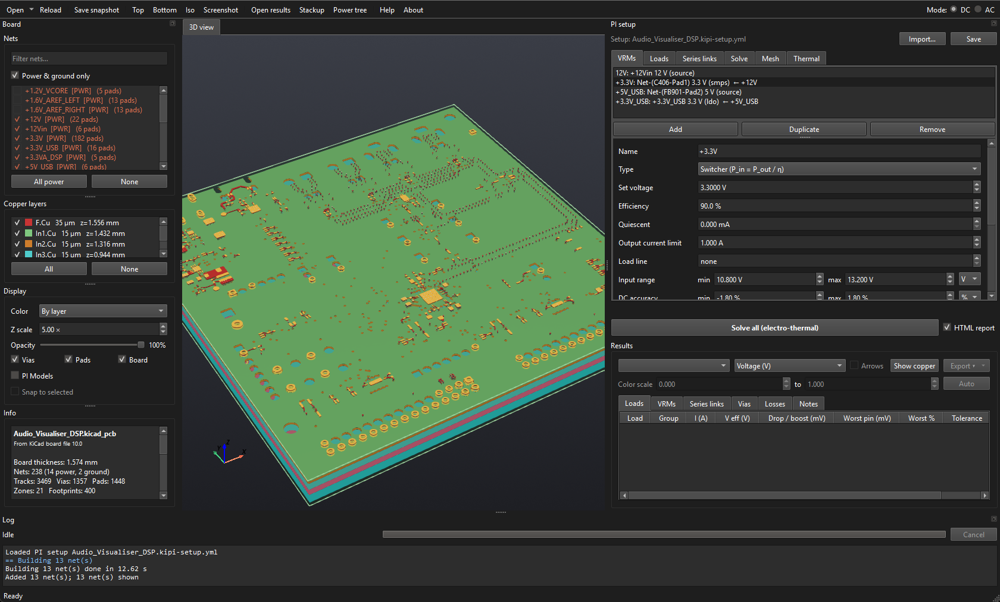
The Board, setup and Log panels are dock widgets: drag their title bars to move them or float them in their own windows. A floating panel has its own minimize and maximize buttons, and F11 (with the panel clicked) toggles it full screen. Double-click its title bar, or drag it onto the main window, to dock it again.
Starting KiPI
- Plugin or standalone. Started from the KiPI button in KiCad's PCB editor, KiPI
runs as the plugin: it reads the board open in the editor and can re-read it,
refill its zones and select items in it. Started any other way (
python -m kipi, or thekipicommand), it runs standalone: it opens board files with Open… and needs no KiCad. The title bar then ends in (standalone), and the controls that need KiCad are hidden (see the toolbar). Standalone opens KiCad board files (.kicad_pcb), ODB++ jobs, HyperLynx files (.hyp) and KiPI snapshots (.kipi.json.gz). - KiCad board files. A
.kicad_pcbfrom KiCad 7 to 10 reads the same as the plugin reads it from KiCad, so a board set up in the plugin opens standalone with its setup. Net classes come from the.kicad_pronext to it. KiPI uses the zone fills saved in the file and cannot refill them: fill the zones in KiCad (B) and save before opening. Zones saved unfilled are listed under Placeholders in the board summary. - ODB++. Open a job as a
.zip,.tgzor.tar.gz, or unpacked by picking itsmatrix/matrixfile. KiPI reads the copper as the job gives it and the stackup from its layer matrix. The setup is found by the job's name: exportBoard.zipbesideBoard.kicad_pcbto share the board's setup. Export at 6 decimals if your tool asks: KiCad's default of 2 rounds coordinates to 10 µm. What the job leaves out (copper drawings' nets, a dielectric's thickness) is listed under Placeholders. - HyperLynx. Open a
.hypfile (KiCad writes one with File → Export → Hyperlynx). KiPI reads its stackup, pad stacks and each net's pins, vias, tracks and copper polygons as the file gives them. The file does not say where a part sits or how it is turned, so each part is placed in the middle of its pads (listed under Placeholders); KiCad's export also leaves out pads with no net. The setup is found by the file's name, as for an ODB++ job. - Standalone setup. Start standalone KiPI with its launcher:
double-click
kipi_launcher.pyw(Windows) or runpython kipi_launcher.py. The first start installs KiPI's packages into an environment of its own. The setup window lists each package with its size and the totals, and offers PARDISO on Windows and Linux x86-64; nothing is installed until you click Install. Later starts open KiPI straight away. To add or remove PARDISO later, use About → Manage dependencies…: KiPI closes, the setup opens, and KiPI starts again afterwards.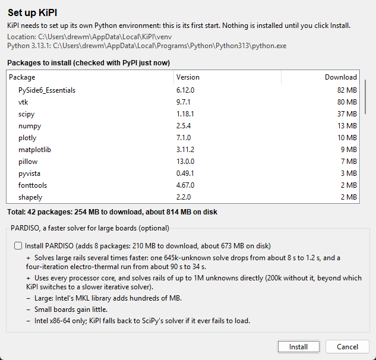
The setup window on a first start. - Pin to the taskbar (Windows): right-click KiPI's taskbar button while it is
open, or its Start menu shortcut (
python kipi_launcher.py --create-shortcut), and choose Pin to taskbar. The pinned button starts standalone KiPI through the launcher, even when it was pinned from the plugin, since only KiCad can start the plugin; a running KiPI of either kind shows on that button. - Task Manager: KiPI shows as KiPI with its icon, not as Python, in Windows
Task Manager, macOS Activity Monitor and Linux System Monitor or
top. On Windows it runs onKiPI.exe, a copy of its environment's Python that it makes in the environment'sScriptsfolder the first time, with the Python DLLs it needs beside it. Should that copy not start, KiPI runs onpythonw.exeas before and does not try it again until Python or KiPI changes. - While KiPI starts it shows a welcome screen with the logo, its version, whether it runs as the plugin or standalone, and the versions of Python and its main packages. It closes on its own after one play of the animation, or when you click it.
- One KiPI at a time (one plugin and one standalone). Clicking the KiPI button while the plugin is already open brings the open window to the front instead of opening a second one; starting standalone KiPI again does the same for the standalone window. The two never take each other's place. A KiPI that crashed does not block the next one.
- One KiCad at a time. KiPI talks to KiCad through its API, which cannot tell two open KiCads apart, so KiPI will not connect (at start or on Load from KiCad) while more than one KiCad project manager or PCB editor is open. The message names each one with its process ID. See Troubleshooting.
Typing values
A number on its own is in the field's unit. Fields in an SI unit (Ω, F, H, Hz, A, V, W, m)
also take a prefix, with or without the unit, and convert it to the field's unit: in a µF
field, 10n, 10 nF and 0.01 are all 10 nF. A resistance
can be written 2 mOhm, 2mΩ or 4k7. Prefixes are case
sensitive (m is milli, M is mega), and u stands for µ.
Fields in other units (%, °C, A/µs, µΩ·cm) take plain numbers. A field shows its usual number
of decimals, plus more when a small typed value needs them.
Toolbar
Every toolbar button
| Button | What it does |
|---|---|
| Load from KiCad plugin | Re-reads the board from the running PCB editor (after you change the layout) and reloads the saved setup. The nets you have ticked stay ticked. Save the setup first if you have unsaved changes. Only one KiCad may be open (see Starting KiPI). |
| Refill zones plugin | When ticked, KiPI asks KiCad to refill every zone and waits for it before reading. KiPI only sees filled copper, so leave this on unless the fills are already current and the refill is slow. |
| Open snapshot… plugin | Opens a board saved with Save snapshot…. KiCad does not need to be running. |
| Open… standalone | Opens a board file:
a KiCad board (.kicad_pcb), an ODB++ job (.zip,
.tgz, or its matrix/matrix file), a HyperLynx file
(.hyp) or a KiPI snapshot (.kipi.json.gz).
Its saved setup comes with it, as with Load from KiCad. The arrow beside it lists
the boards opened lately. |
| Reload standalone | Reads the open board file again. When the file is saved (in KiCad, say), KiPI asks whether to read it again by itself. Ticked nets stay ticked. |
| Save snapshot… | Saves the extracted board as
.kipi.json.gz, to analyze later, on another machine, or to attach to a bug
report. |
| Top / Bottom / Iso | Snap the 3D camera to look down on the board, up at its underside, or from an isometric angle (keys Z, Shift+Z and Home; see Keyboard shortcuts). They also bring the 3D view to the front from the Impedance and Board map tabs. |
| Screenshot… | Saves whatever is in the middle as a PNG: the 3D view, the impedance plot or the board map, whichever tab is showing. |
| Open results… | Reopens saved results without solving again. Load the same board first. In DC mode it opens a DC solve saved with Export ▾ → Save results…; in AC mode, the rails saved with the AC panel's Save results…. |
| Stackup | Opens the Stackup window: the board's layers with their thicknesses, εr and copper resistivity. |
| Power tree | Opens a block diagram of the setup, drawn left to right in the direction power flows: each source and regulator, the rails they drive, series links between rails, and the loads and capacitor models on each rail (capacitors are grouped per model and rail, with a dashed line). VRM types differ in colour and tag: a SOURCE has a double border, and regulators (LDO and SMPS) a dashed one. A rail with three or more loads, or capacitor groups, packs them into a framed grid fed by one arrow, titled with their count (and the loads' total current); the grids take the shape that lets the whole tree fit the window largest. Each block sits just right of the one feeding it. Ground nets, and net ties between them, are left out. Hover a block for its pins; drag to pan, Ctrl + wheel to zoom, Save image… for a PNG. It redraws as the setup changes. |
| Help F1 | Opens this guide in your web browser. |
| About | Version, author and project links, and how often the project has been cloned and its releases downloaded. Those counts are fetched once a session from the project's GitHub repository; offline, the last ones fetched are shown, or none. Copy version info copies the versions of KiPI, Python, its libraries and the sparse solver in use, for bug reports. Check for updates asks GitHub for the newest KiPI release and says whether it is newer than yours, with a link to download it; KiPI never checks on its own. In standalone KiPI started by its launcher, Manage dependencies… closes KiPI and opens its setup (for example to add or remove PARDISO). |
| Mode: DC / AC | Chooses the analysis. The setup dock shows that mode's panel. The DC setup and results are kept while you are in AC and come back when you switch to DC. You cannot switch while a task is running. |
Stackup window
The Stackup toolbar button opens a window with the board's layers top to bottom: each copper layer and each dielectric with its thickness, each dielectric's material, εr and in-plane thermal conductivity, and each copper layer's conductor and resistivity. Every analysis, DC and AC, uses this stackup, and the 3D view draws it. The window can stay open beside the main window.
Beside the table, a cross-section draws the layers to scale, top to bottom: copper in its layer colour, each dielectric in a colour for its material, and each layer's thickness beside it in the unit chosen. It follows the thicknesses as you type them. A layer too thin to see at the window's size, such as a copper foil on a thick board, is drawn 3 pixels tall, and its label gives the real thickness; where the labels do not all fit, only the copper layers are labelled and the rest show on hover. Click a layer in the drawing to edit its thickness in the table.
The solder mask and silkscreen on each side are listed above and below the copper, in their color. They come from the board: KiCad's stackup gives the mask's thickness and color, an ODB++ job its mask and silkscreen layers. KiCad gives a silkscreen no thickness, so KiPI takes 15 µm; a board with no stackup of its own gets KiCad's default, a 10 µm mask and a silkscreen on both sides. Unlocked, their thicknesses can be changed. They sit outside the board, so they do not add to its thickness or move any layer. Only the electro-thermal solve uses them: heat leaving the outer copper for the air crosses them (see Thermal).
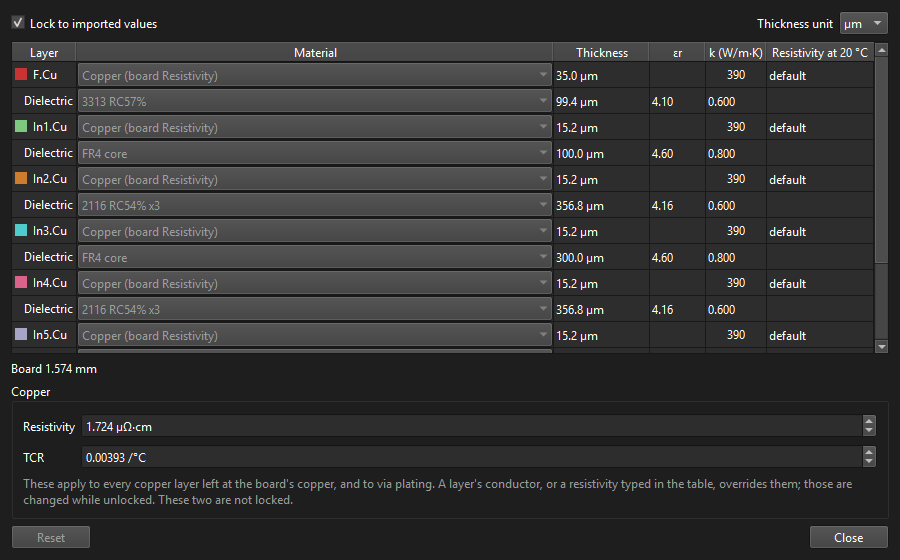
Controls
| Control | What it does |
|---|---|
| Lock to imported values | Ticked (the default), the thicknesses, materials and εr are the ones read from KiCad's board stackup. Untick it to try others: type a new thickness for any copper or dielectric layer, or choose a dielectric's material or type its εr. The layers above and below move with a thickness change, and the total board thickness shows under the table next to KiCad's. Ticking it again goes back to KiCad's values. |
| Thickness unit | Shows and takes the thicknesses in µm,
mm, mil or oz (1 oz = 35 µm). Ounces are a copper weight, so in oz the dielectrics show
in mil. In a µm or mm field a value can also carry its own unit, like 35um
or 0.2mm. KiPI remembers the unit. |
| Material (dielectrics) | Each dielectric's material, from the list KiPI knows: FR4 core and prepreg, polyimide, Kapton, Rogers RO4350B, RO4003C, RO3003 and RT/duroid, PTFE, polyolefin, alumina and aluminum nitride ceramics, and an aluminum metal core. KiCad's own name for the material is listed too when it is not one of these. Choosing a material sets its typical εr (a datasheet value near 1 GHz; type another if your laminate's differs) and its in-plane thermal conductivity k, which the electro-thermal solve uses. Type over k, unlocked, if your laminate's differs; choosing a material again goes back to its typical value. The solve also needs the conductivity through the laminate, from one copper layer to the next: KiPI takes the material's typical through-plane value (FR4 core 0.3 W/m·K), and a k you type keeps the material's ratio of the two. A ⚠ beside k means KiPI did not recognize KiCad's name and took the layer as FR4. Setups from before 0.8.0 with a Thermal tab Laminate k open with that value as every dielectric's k. |
| Material (copper layers) | What each copper layer is
made of. Copper (board Resistivity) uses the Resistivity and TCR below.
Or choose annealed copper, electrodeposited or rolled-annealed copper foil (IPC-4562's
maximum resistivity), silver, gold, aluminum, nickel or tin: this sets the layer's
resistivity, its TCR for the electro-thermal solve, and its thermal conductivity
k for heat spreading. A resistivity typed in the table afterwards wins; setting it
back to default returns the layer to the board's copper. A layer given a
resistivity by hand in an earlier version shows as Custom resistivity. Like the
thicknesses, a layer's conductor is changed only with Lock to imported values
unticked; ticking it again keeps the conductor chosen. |
| εr | Each dielectric's constant, for the AC solve.
default means the stackup gives none (or the material is a metal), and the
Default εr below applies. Every other dielectric uses the εr from KiCad's board
stackup (Board Setup → Physical Stackup); a dielectric made of several sublayers gets
their series combination. The AC log and report list the εr used for each
dielectric. |
| Resistivity at 20 °C (table) | A copper layer's own
resistivity, set by its conductor or typed in while unlocked; default uses
the Resistivity below. |
| Resistivity, TCR | Resistivity at 20 °C (annealed copper, 1.724 µΩ·cm, by default) of every layer left at the board's copper and of via plating, and its temperature coefficient (0.00393 /°C for copper), used by the electro-thermal solve. These are setup settings, so they can be changed while the stackup is locked. |
| Loss tangent, Default εr | For the AC solve: the
dielectric loss (FR4 about 0.02), which damps the plane resonances, and the dielectric
constant of every dielectric whose εr is default. Setup settings too, so
they can be changed while the stackup is locked. (Before 0.9.0 they were on the AC
setup's Mesh tab.) |
| Reset | Back to KiCad's thicknesses, materials and εr, still unlocked. |
- The stackup and resistivities are saved with the PI setup. An edited stackup is used again the next time the board is opened (unlocked). If a layer has been added, removed or renamed in KiCad since, the log says so and KiCad's stackup is used.
- To compare stackups, solve, edit, and solve again. A stackup change clears the DC results, which were for the old stackup; the AC results stay until a rail is solved again. Reports note a stackup edited in KiPI.
- KiCad's API cannot change a board's stackup yet, so edits stay in KiPI. To keep a stackup you settle on, enter it in KiCad's Board Setup → Board Stackup → Physical Stackup.
- A board snapshot (Save snapshot) keeps KiCad's stackup; the edits live in the setup.
Board panel
The left-hand dock. Its four parts are separated by splitters you can drag.
Nets
Every net on the board. Tick the nets you want to analyze. Ticked nets are drawn in 3D and are the only nets offered in the setup's pin pickers, so a net you need for a VRM, load, series link, capacitor or probe must be ticked first.
| Control | What it does |
|---|---|
| Filter box | Shows only nets whose name contains the text. |
| Power & ground only | Hides signal nets that are not
ticked. Power nets are shown in orange with [PWR], grounds in blue with
[GND]. KiPI recognizes them by name (+3V3, VCC,
GND…), net class, or a zone with several pads. |
| All power | Ticks every power and ground net, keeping any others already ticked. |
| None | Unticks everything. |
The ticked nets are saved with the setup. A board with no saved choice starts with a guess: its largest power planes and the main ground. Building the 3D copper of a big net takes a moment; nets appear as they finish, and Cancel stops the build.
Copper layers
Each copper layer with its thickness and height in the stackup. Untick a layer to hide it; All and None show or hide every layer at once. Hiding layers does not change the result colors; set the color scale to look closer.
Display
| Control | What it does |
|---|---|
| Color | Colors the plain copper by layer or by net. By layer, each layer has its color from the PCB editor's color theme (Preferences → Colors in KiCad), read again on every Load from KiCad; the log names the theme. If the theme cannot be read, KiCad's default theme colors are used. |
| Z scale | Stretches the stackup vertically (1× to 100×) so the layers can be told apart. It only changes the drawing. |
| Opacity | How solid the copper layers and pads are drawn, from 5% to 100%, in both the plain and the result views. Lower it to see the layers beneath; vias stay solid. |
| Vias / Pads / Board | Show or hide via barrels, pads and the board body. |
| Mask / Silkscreen | Show the solder masks, in their color and open over the pads, and what the silkscreens print: the board's drawings and text on F.SilkS and B.SilkS, off the pads. Text read from a board file is drawn in a font like KiCad's, in the same place; the running KiCad and ODB++ give KiCad's own. Both start off, since they hide the copper. The copper and result views each remember these settings, like 3D Models: over results they start off, whatever the copper view shows. |
| PI Models | Marks the parts the current
analysis uses on the copper: a dot on each of their pads, larger on the rail's pins and
smaller on ground, with the part's name above. In DC mode those are the setup's
VRMs (green), loads (cyan) and series links (magenta). In AC mode
the probes (violet) take the loads' place — the impedance is looked into at a
probe, and a load's current says nothing about it — beside the same VRMs and series
links and the capacitors with a model (white), which only an impedance sweep
uses. Only pads on a
net shown are marked, and the marks follow setup edits. They are drawn over the plain
copper only, not over results. Unticked to start with. Clicking a VRM, load, series link, probe or capacitor model in the setup's lists marks it (every part of a capacitor model) in amber, and with Snap to selected ticked brings the view to it; PI Models is left as you set it. Clicking a part's name (or one of its dots) in 3D selects it in the current mode's setup, ready to edit. Either way, the newly selected part blinks red and amber for a few seconds. Clicking a capacitor in 3D selects its model in AC mode's Capacitors tab. |
| Snap to selected | Brings the view to a part when it is picked in the setup's lists (ticked to start with). Available only while PI Models is ticked, since it goes to the part's marks. Untick it to keep the view where it is; the part is still marked and blinks. KiPI remembers the choice. |
| 3D Models | Shows the KiCad 3D models of every part on the board. In the geometry view they are on to start with; over results they start hidden, and ticking 3D Models there shows them too. Each view remembers its own setting. See Part 3D models below. |
| Guess models | Picks models from KiCad's library for the parts that have none, by footprint name, and ticks 3D Models. Only when clicked; see Part 3D models. |
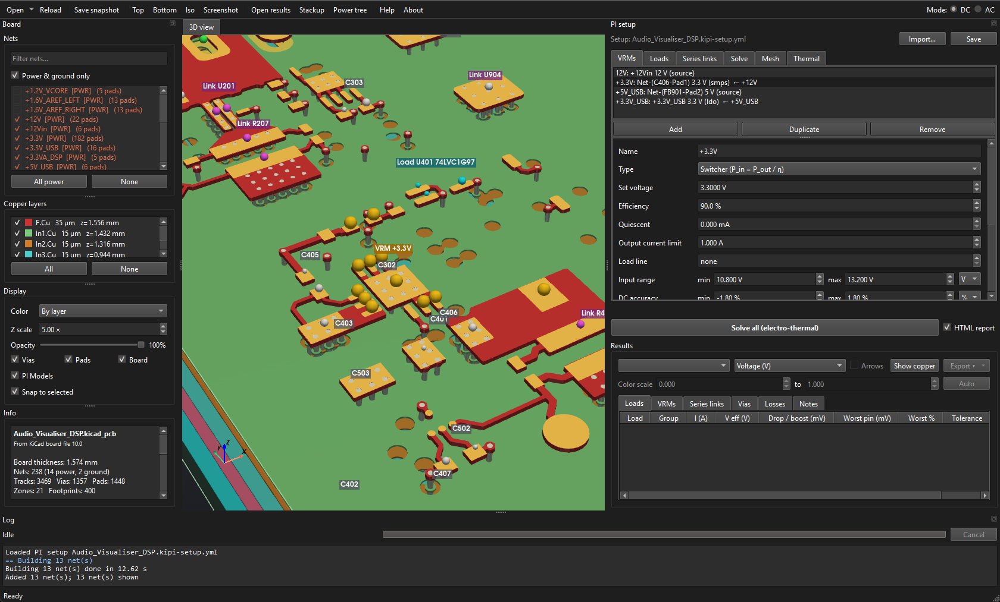
Part 3D models
- KiPI asks KiCad's command-line tool,
kicad-cli, to export just the parts it needs, so KiCad finds the model files the same way its own 3D viewer does (STEP and VRML). It runs in the background, the first time the models are shown; each part is read once per board. kicad-clireads the saved.kicad_pcbfile. A part moved since the last save is drawn where it was saved; save the board and click Load from KiCad to update it.- The Z scale stretches the board but not the parts: top-side parts sit on the stretched board at their true height, and on a board made thicker or thinner in the Stackup window.
- Clicks go through the models to the copper beneath, so probing works as without them.
- A part whose model KiCad cannot find is named in the log with the missing path. If
kicad-clior the board file cannot be found, the log says so once and no models are drawn; see Troubleshooting. - Guess models is for a board with no KiCad board file to read models from (an
ODB++ job, a snapshot opened away from its board) and for parts whose models KiCad cannot
find. For each part with no model, it looks up the footprint (or ODB++ package) name in
the 3D model library KiCad installs: the whole name, a name the part's ends with
(
Capacitor_SMD_C_0402_1005Metric), the name it starts with (a_HandSoldervariant), a chip resistor, capacitor or inductor's size code (CAPC1005X55N,C0402,R0805), and last the closest name.kicad-clithen places the models where the parts sit, turned and on their side. It is a guess, so it never runs by itself: a model not found by the whole name is left out if it is far larger or smaller than the part's pads, and the log names each one kept. Opening or reloading the board drops them. - Standalone, part models are offered when KiCad is installed on the computer.
Info and Select in KiCad
Shows a summary of the board when it loads, and afterwards whatever you last clicked in 3D: the layer and coordinates, the pad or via hit (net, drill, layer span), and, when results are shown, the voltage, drop, current density, power density and via current at that point. In AC mode it shows the impedance plot's cursor values.
The summary says where the board came from (for example From KiCad PCB editor 10.0.7, and the snapshot file it was opened from). Under Placeholders it lists anything KiPI had to fill in because the source did not give it, such as a default stackup when the board's own is incomplete. Results that depend on a placeholder are only as good as the placeholder.
Select in KiCad selects the picked pad, via or track in the PCB editor, so you can find it in your layout. With Follow in KiCad ticked (the default), each click in 3D does this by itself. The editor also centres its view on the item and makes its copper layer the active one. KiCad can't be sent to a bare point, so a click on zone copper with no track under it leaves the editor's view where it is. Both need a live KiCad connection (not a snapshot), so the plugin has them and standalone KiPI does not.
3D view and mouse
Navigating and probing
| Action | Mouse |
|---|---|
| Rotate | Left-drag |
| Pan | Shift + left-drag, or middle-drag |
| Zoom | Scroll wheel |
| Probe / identify | Left-click copper or a via. The result goes to the Info box and the status bar. Clicks pass through part models. |
In AC mode two more tabs appear beside 3D view: Impedance, with the impedance plot, and Board map, with the mesh and parts of the solve.
Keyboard shortcuts
Every key
The view keys work once you have clicked in the 3D view, so that Home and letters still reach the lists and text boxes. The rest work anywhere in the main window. Each button's tooltip names its key. On macOS, Ctrl is the Command key.
| Key | What it does |
|---|---|
| Home | Iso view (in the 3D view) |
| Z / Shift+Z | Top / bottom view (in the 3D view) |
| Ctrl+O | Open… (standalone) or Open snapshot… (plugin) |
| F5 | Reload, or Load from KiCad |
| Ctrl+S | Save snapshot… |
| F12 | Screenshot… |
| F11 | Full screen and back for the Board, setup or Log panel you last clicked in, which floats it first |
| Ctrl+Shift+O | Open results… |
| Ctrl+L | The Stackup window |
| Ctrl+T | The Power tree |
| Ctrl+1 / Ctrl+2 / Ctrl+3 | DC / AC / Coupled Noise mode |
| Ctrl+Enter | Solve: Solve all in DC mode, Solve rail in AC mode, when the button can be pressed |
| Esc | Cancel the running operation |
| F1 | This guide |
Log and progress
The Log dock
The bottom dock shows the current stage, a progress bar, and Cancel, which stops the running task (loading, building nets or solving). The log streams every stage with its timing, solver residuals and warnings: warnings are amber, errors red, stage headers blue.
While anything runs, the right end of the status bar shows a turning spinner with the operation and how long it has taken so far (part 3D models loading in the background included). The spinner keeps turning while KiPI works; a stage that cannot say how far it is moves the progress bar back and forth instead. While the window itself is busy, drawing a big solve's results or saving a snapshot, the mouse pointer shows the wait cursor.
Each session also writes a log file to kipi/ in your temporary folder
(%TEMP% on Windows, $TMPDIR on macOS, /tmp on Linux).
See Troubleshooting.
DC concepts
Net groups, the power tree and voltage references
Net groups
KiPI solves copper one net group at a time. A group is a net plus every net joined
to it by a series link. For example, +3V3 and
+3V3_FILT joined by a ferrite bead are one group. Each group may be driven by at
most one VRM. Ground nets used by VRM or load ground pins are their own groups.
The power tree
A VRM's input pins make it a load on its upstream net. KiPI solves the tree from the leaves back to the source: downstream rails first, then each VRM's input current (from its output current, efficiency or quiescent current) is applied as a load upstream. So the 12 V input rail carries the current of everything it feeds.
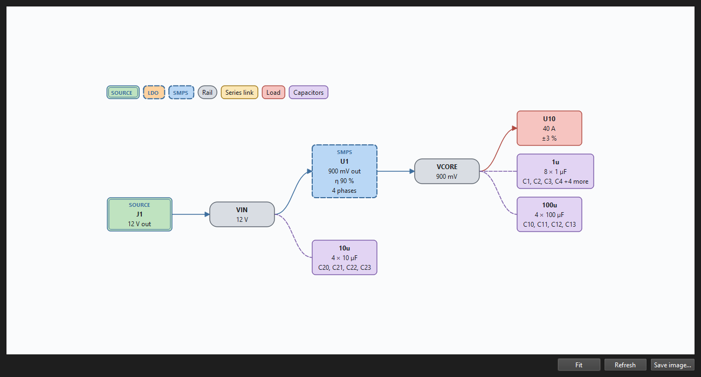
Voltage reference
Voltages are measured against the source's ground (0 V). If ground pins are given, the ground return is solved too and a load's ground rises above 0 V. The figure to compare with the VRM's regulated voltage is the load's effective voltage: supply minus ground at the load.
Isolated converters
A VRM of type Isolated (a flyback, a forward converter or an isolated module) is a switcher whose output side has a ground of its own. Its Output ground pins hold that ground at 0 V: they are its reference, as a source's ground pins are on the input side, and the loads on its rails return their current to them. Its input current returns through its Input ground pins, on the ground of the side feeding it. The two grounds must not be joined by a DC connection; a converter whose grounds are tied is a switcher. An isolated converter has one phase. In AC mode its rails are solved against its output ground, and Coupled Noise does not model isolated converters as aggressors.
Drop and boost
A drop is a pin below the VRM's regulated voltage. A boost is a pin above it, which happens with remote sense: the VRM raises its output to hold a sense point further down the copper, so pins nearer the VRM sit above the regulated voltage. A load is judged by its worst pin, whichever direction.
The pin picker used everywhere pins are chosen
Every "pins" field is three boxes:
- Net: one of the nets ticked in the Board panel. Type to search.
- Part: the parts with pads on that net, busiest first, shown as reference, value and
pad count, e.g.
U4 TPS62130 (3). Type to search (u4is enough). - Pins: optional pin numbers, comma-separated, e.g.
1,2,5. Blank means every pin of that part on that net; the placeholder lists them.
Optional pickers have (none) as their first net.
Pre-filled fields guesses from the board, always yours to change
As you pick pins, KiPI fills in the fields that usually follow from them. Each guess only fills a field you have not set yourself (an empty field, or one it filled in for the previous part), and when the board does not give an answer the field is left as it was. Change anything it fills in: your value is kept.
| When you… | KiPI fills in |
|---|---|
| pick a VRM's output net | Target voltage from the
net's name: +3V3, 3.3V, V1P8, VDD_0V75,
+12V, -5V, VBUS (5 V). A name with no voltage in it
(VCORE, VIN) leaves the voltage alone. |
| pick a VRM's output pins | Ground pins: the same part's pins on its ground net. For an LDO or switcher, Input pins: the same part's pins on its other rail, if it has exactly one. The VRM's Name follows the part while it is still the part's reference. |
| add phases to a VRM | Each new phase repeats the last
one on the parts the next phase likely uses, with the same pin numbers:
|
| pick a load's supply pins | Ground pins: the same part's pins on its ground net. |
| pick a series link's side A | Side B: when the part has pads on just two nets (a resistor, ferrite, fuse, inductor), its pins on the other net. Not for capacitors, or when the other net is a ground. When both sides are on one resistor, Resistance is read from its value. |
| pick a probe's supply pins (AC) | Ground pins: the same part's pins on the probe's ground net, or on its own ground net. |
| Add a VRM, load or series link | The same guesses for its first part. A new series link starts on a two-terminal part between the first two ticked nets that are not grounds. |
How the ground net is found. Ground nets are not always called GND, so KiPI tries, in
order: ground nets the setup already uses (any VRM, load or probe ground pins), nets named like a
ground (GND, PGND, AGND, VSS,
EARTH…), then the board's biggest net (the one with the most pads) if it is not
named like a rail. Only nets ticked in the Board panel are used, except grounds the setup
already uses. Once one VRM or load has ground pins on an unusually named ground, every later
guess uses it.
DC setup tabs
The PI setup dock on the right. Save at its top writes the setup next to the
board (DC and AC share one file). Import… beside it fills the VRMs, loads and series
links from a Tomachie power-tree file (<schematic>.pdn.json, see
Files), keeping the settings, thermal and AC setup. The typical
current and resistance are solved; each maximum the file gives is kept for a
Worst case (max) solve, chosen beside Solve all. A current the file does not
give is marked not known, and the results it touches are INCOMPLETE. The log lists what
could not be placed on the board. Problems that stop a solve are listed in red under the tabs
as you edit. The VRMs, Loads and Series links tabs share one layout: a list with Add,
Duplicate and Remove, and an editor for the selected entry below it.
VRMs tab regulators and supplies
| Field | Meaning |
|---|---|
| Name | Used in the results tables. |
| Type | Source: an ideal supply with no input (connector, bench supply, battery). LDO: Iin = Iout + Iq. Switcher: Pin = Pout / efficiency. Isolated: a switcher whose output side has its own ground (see isolated converters). |
| Target voltage | The rail's target: the VRM regulates to it at its output (or sense) pins, and loads are judged against it. Read from the net name when you pick the output net (see pre-filled fields). |
| Efficiency | Switcher and isolated only. |
| Quiescent | LDO, switcher and isolated: extra input current. |
| Output current limit | Optional. The VRM row shows PASS if its total output current (all phases) is at most this. |
| Load line | Optional, DC only (adaptive voltage positioning). The VRM regulates to its regulated voltage less this resistance times its output current: what its connected loads and the VRMs it feeds actually draw, so a disconnected load adds no droop. Drops are still measured from the regulated voltage, so the droop counts against each load's tolerance. The Notes tab, the HTML report and the VRM CSV show the droop and the voltage it regulates to (V target). none holds the regulated voltage. |
| Dropout | LDO only: the least input-to-output difference at which it still regulates. |
| Input range | Optional input range, min and max on one row, in V, in ±V from the input rail's nominal voltage (the target voltage of the VRM driving it; e.g. min -0.5 V, max +0.5 V) or in % from it (e.g. min -10 %, max +10 %). Switching the unit converts the values when that VRM is known. A range in ±V or % with no VRM driving the input is a setup error. A VRM whose solved input is outside its range (or an LDO below its dropout) cannot hold its output, and every load it feeds, directly or downstream, is marked VRM OUT OF REGULATION. |
| DC accuracy | LDO, switcher and isolated only; used by the AC target calculator. The output's DC error (DC accuracy or DC tolerance) from the datasheet: the regulator's reference accuracy, the feedback resistor tolerances, leakage into the FB pin, and line and load regulation. Min and max on one row, in % of the regulated voltage (e.g. -1 %, +1 %), in ±V from it (e.g. -0.01 V, +0.01 V) or in V, the lowest and highest output voltage. |
| Control loop bandwidth | AC only. Also called the loop gain crossover, gain crossover or control loop crossover frequency; it depends on the total output capacitance and the loop tuning. The AC solve leaves the VRM out of circuit, so it gives the open-loop PDN impedance; below this frequency the converter's loop holds the rail. Probe targets are drawn and judged only above it (see Targets and the VRM bandwidth). Required in AC mode: a rail whose VRM has none cannot be solved. |
| Phases / Edit phase | Multi-phase regulators. See the multi-phase workflow. |
| Output pins | Where it drives the rail: the output pin, or for a switcher usually the inductor's output side. |
| Input pins | LDO, switcher and isolated: where it draws its input. This links it into the power tree. Filled in from the output part when it has one other rail. |
| Ground pins | Optional: solve the ground return as well. Filled in with the output part's ground pins. On an isolated converter, Output ground pins: the output side's ground, which they hold at 0 V. |
| Input ground pins | Isolated only, optional: the input side's ground pins, where its input current returns to the VRM feeding it. Filled in with the output part's pins on its other ground net. |
| Sense pins | Optional remote sense (positive). |
| Ground sense pins | Optional negative remote sense on the ground net (needs ground pins). |
| Mesh sense | Off by default. Any number of sense points (Sense points, edited one at a time with Edit sense point), each with its own sense and optional ground sense pins. Every point's sense pins are held at the regulated voltage (less the load line), above its own ground sense pins; the VRM's current enters there and its output pins only measure. |
Loads tab parts that draw current
| Field | Meaning |
|---|---|
| Name | Defaults to the supply part's reference. |
| Supply pins | Where the current is drawn. |
| Current split | Equal across the supply pins, or Per pin group: a table of groups, each with its own pins and current. Add pin group adds a row; One group per pin replaces the table with one row per supply pin, sharing the total. ✕ removes a row. Use groups when a part draws different currents on different pins. |
| Current | The load's total current (equal split). Negative values are allowed for parts that source current. |
| Ground pins | Optional: include the load's ground return. Filled in with the supply part's ground pins. |
| Tolerance | Optional min and max on one row, in % from the VRM target voltage (e.g. min -3 %, max +5 %), in ±V from it (e.g. min -0.1 V, max +0.15 V) or in V (e.g. 3.135 to 3.465 V). Either may be left "not set". PASS if every supply pin is within it. Switching the unit converts the values when a VRM drives the load's rail. |
| DC tolerance, AC tolerance | Optional, for a part that gives its tolerance in two shares as well as in total: the DC share, where the pin's steady voltage may sit (the VRM's accuracy and the copper's DC drop together), in the same units as the tolerance; and the AC share, how far ripple and load transients may swing it from there, in ±V or %. They are saved with the setup for a later analysis, and the AC target calculator can copy the AC one; no solve reads them, and PASS still follows the tolerance above. |
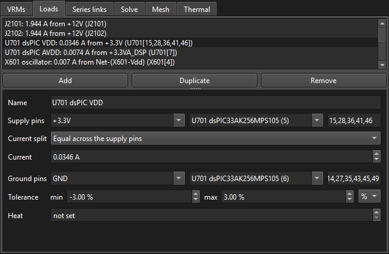
Split across nets… under the list shares one part's total current over several of its supply nets, as a load on each: for when only the part's total draw is known and some of its pins are on a net of their own, behind a ferrite bead say. Pick the part, give its total current and tick the nets (its grounds are left out). Equal per pin gives each net its pins' share of the total; Equal per net the same to each. A net the part already has a load on gets that load's current set (its pin groups are cleared); the others get a new load, with the part's ground pins.
Load models
A load model is a part's supplies in a YAML file of their own: for each supply its pins, current or pin groups, tolerance and heat, and for the AC analysis its target impedance, or the load step it is worked out from. One model serves every copy of a part, on this board or another. The Model ▾ button under the Loads list (and under the AC Probes list) has:
- Apply model file to loads…: pick a model, then tick the loads to apply it to, each with the model supply to take beside it. Loads whose pins or name match a supply come ticked. Only what the model gives is set; pins are left as they are.
- Add loads from model file…: one load per supply on each part ticked. The list holds the parts that have the pins of at least one of the model's supplies; a load's net is the one its pins are on, and its ground pins are the model's or, without them, guessed as for a new load.
- Export a part's model…: every load and probe on one reference designator, one supply each (named after the load, less its reference), so a part with several supplies keeps them all.
On the Probes list the same menu sets targets: the model's flat target or custom points, or one from its load step and slew rate, as the target calculator works it out, with the tighter side of the supply's AC tolerance (without one, of its total tolerance of the rail's VRM voltage). A model file, by hand:
kipi_load_model: 1
part: XC7A35T-1CSG324C
supplies:
- name: VCCINT
pins: [F7, F9, H7]
ground_pins: [A1, A10]
current_a: 1.2 # or pin_groups: [{name: core, pins: [F7], current_a: 0.8}, ...]
tolerance: {min: -3, max: 3, unit: "%"} # total: V, ±V or %
dc_tolerance: {min: -1.5, max: 1.5, unit: "%"} # VRM accuracy + DC drop: V, ±V or %
ac_tolerance: {min: -0.03, max: 0.03, unit: "±V"} # ripple + transient: ±V or %
target: {ohm: 0.01, up_to_hz: 50.0e6} # or {points: [[1.0e3, 0.01], [1.0e8, 0.1]]}
load_step: {step_a: 0.6, slew_a_per_us: 5}
Every key but name is optional. dc_tolerance and
ac_tolerance are a load's DC tolerance and AC tolerance. Models
from before 0.9.2 gave the AC tolerance as ac_tolerance_mv in
load_step; that is still read, as that many mV either way.
Series links tab parts between two nets
Sense resistors, ferrite beads, fuses, load switches, 0 Ω links: any part that passes DC
from one net to another. Give the part's Side A pins and Side B pins and its
Resistance (DCR); 0 is a short. Picking side A on a two-terminal part fills in side B
on its other net, and when both sides are on the same resistor, the resistance is read from its
value field (10m, 4k7, 0R1, 5 mΩ…).
ESL is used by AC only. A new link starts on a part that bridges the first two ticked
nets that are not grounds, if there is one.
Estimate ESL fills in the ESL for you:
- From package uses the size of the part on side A. It reads the size from the
footprint's name (
R_0603_1608Metric,RESC2012X65N,0805), or else from how far apart the part's two pads are. The estimate is 0.1 nH + 0.3 nH for each mm between the terminals. That line runs through Vishay's measured 0402 and 0603 chip resistors (0.4 and 0.6 nH), and gives 0.7 nH for an 0805, 1.1 nH for a 1206 and 2 nH for a 2512. It suits a chip resistor, fuse or jumper. A ferrite bead's ferrite makes its inductance far larger, so use its impedance instead. - Ferrite bead… asks for the bead's impedance |Z| at one frequency, read off its datasheet's curve, and works out L = √(|Z|² − DCR²) / 2πf. Choose a point well below the curve's peak, where |Z| still climbs in a straight line. At and above the peak the bead acts as a resistor, so a point there (such as the 100 MHz headline figure of many beads) overstates the inductance.
Import SPICE model… uses the part's SPICE model from its maker, a ferrite bead's say. Pick its subcircuit from the file; the dialog shows the values fitted to it before you accept. The subcircuit is saved in the setup. With Use the SPICE model's impedance ticked, the AC and Coupled Noise solves take the link's impedance from the model at every frequency, so a bead keeps its resistive peak. The DCR and ESL are then fitted to it and locked: the DCR is its resistance at DC (which the DC solve uses), and the ESL its inductance at 100 kHz, low on a bead's inductive slope. Untick to use the values as you type them; the model is kept.
A diode is imported the same way: pick its .model … D(…) card, or a
two-pin subcircuit with diodes in it, and make side A its anode (the model's first pin).
The dialog shows its forward voltage at 1 mA, 100 mA and 1 A. The DC solve takes the drop
from the model at the current the diode carries, so the drop rises with the load. The AC and
Coupled Noise solves use its small-signal resistance (n·VT/I + RS) and its
junction and diffusion capacitance at the current the last DC solve found through it, or,
without a DC solve, at an estimate: what the loads and VRM inputs on side B's nets draw at
nominal voltages (nothing, so the diode blocks, when a VRM drives side B). The solve's
notes say which. The DCR and ESL shown are its slope resistance and inductance at 1 A. A
diode that is reverse biased with a load beyond it and no other supply has no DC solution,
and says so. The junction is read at 27 °C. Setups from 0.9.2 with a constant forward drop
load with a diode model of that drop.
What KiPI reads from a SPICE file. A two-pin .SUBCKT of resistors,
inductors, capacitors and diodes, which is how makers model capacitors, resistors, ferrite
beads and diodes, or a diode's .model D card. Diodes use IS, N, RS, BV, IBV,
CJO, VJ, M, FC, TT and an area factor; LTspice's piecewise-linear diode (Ron, Vfwd) is
not read.
It may call other subcircuits in the same file, use .param values and
arithmetic, and use LTspice's Rser, Lser, Rpar and
Cpar. 0 V sources (current probes) are read as shorts. Anything else
(transistors, controlled or behavioral sources, coupled inductors) is refused with the
element named, and .include lines are not followed. The file is only read,
never run. Models of switching regulators and other active parts are not for this; give a
VRM or load its own values instead.
The nets a link joins are solved together as one group, so a group can only hold one VRM. A load pin with no copper path to its VRM is reported, not guessed at (see Loads not connected by copper).
Solve tab choose which net groups to solve
Lists every net group with its role (rail from a VRM, ground, or not driven). Untick groups that are not modeled or routed yet; All and None tick or untick them all. Only ticked groups are validated and solved, and the choice is saved. Where a solved group meets an excluded one:
- A VRM whose output is excluded becomes a constant load on its input pins, drawing the input current its rail would need at nominal voltages.
- A VRM whose input is excluded is treated as an ideal source.
- Ground pins on an excluded ground are ignored.
The Notes results tab lists what was left out and substituted. The Solve button shows how many groups will be solved, e.g. Solve 3 of 5 net groups.
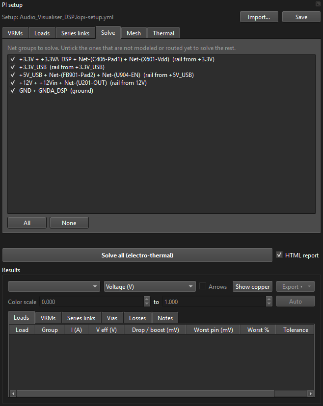
Mesh tab
| Field | Meaning |
|---|---|
| Max edge | Largest triangle edge, mm. Smaller is more accurate and slower. Raise it for quick looks at big boards. |
| Via grading | How fast elements grow away from plated holes, where current crowds. Lower keeps the mesh fine further out; 0 turns grading off. |
| Via plating | A table of rules, first match wins: hole type, drill range, plating (µm, growing inward from the drill) and what a filled hole is filled with. A via the KiCad board marks as filled carries its core too when the fill conducts. Defaults: IPC-6012 Class 2 minimum averages. |
The defaults suit most boards; set the via plating your fabricator states.
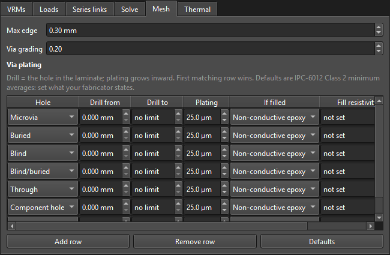
Thermal tab electro-thermal co-simulation, off by default
Tick Electro-thermal co-simulation to let copper losses heat the board, with warmer copper becoming more resistive. KiPI alternates electrical and thermal solves.
| Field | Meaning |
|---|---|
| Ambient | Air temperature around the board. |
| Iterations | Electrical/thermal passes. Three is usually enough; the Thermal results tab shows how much each changed. |
| Airflow | Air speed over both faces, m/s; 0 is still air. The air always flows parallel to the board, along both faces, and its direction is fixed: every point is cooled equally, as if the air stayed at ambient across the whole board, so upstream parts do not warm the air that reaches downstream ones. Convection is h = 10 + 3.8·v W/m²K per face. The heat crosses each face's solder mask and silkscreen on the way (Stackup window). |
| Grid | Thermal cell size; auto is about 250 cells across the board. |
| Include load power dissipation | Off by default. When ticked, each load heats the board with the power it draws: the sum over its supply and ground pins of pin current × pin voltage, spread over those pins. A load without ground pins is taken as returning at 0 V. |
| Max copper temperature | Optional limit: copper hotter than this on any layer is FAIL. |
| Max rise above ambient | Optional limit on the temperature rise. |
Heat comes from every solved net and layer, vias, DC connections (I²R, at their pins), VRM conversion loss and, with Include load power dissipation, the loads. Each copper layer has its own temperature: heat goes onto the layer it is made on (a part's on the layers of its pads), crosses the laminate to the layers above and below, and goes down plated holes on any net. Only the top and bottom layers lose heat to the air. The report's Component power dissipation table lists the DC connections' and loads' heat. The limits grade the last solve straight away when you change them.
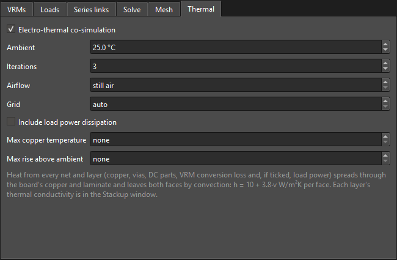
Solving
Solve all, report and Cancel
Solve all saves the setup, meshes every ticked net group and solves the power tree. It is disabled while there are problems (listed in red). If you click it while the 3D view is still building nets, the solve is queued and starts as soon as that finishes.
Once there are results, after a solve or with saved results opened, click
Report to write <board>_kipi_report_<date>_<time>.html
of them next to the board; the time stamp keeps each report instead of overwriting the
last one. It opens in your web browser when it is written, and
Open report opens it again later. The report is a single offline file with every
table, an interactive 3D view of each net group, per-layer statistics and maps, and the
temperature map. Over each 3D view, a tickbox per copper layer (and one for the vias)
hides or shows that layer in the view and its voltage and current-density maps; the
3D views attached to a PDF report have them too.
Choose PDF beside Report for a .pdf to print or attach
instead. It has the same tables and maps, without the sortable columns. It opens in your
PDF viewer. Its User notes box is a form field: click in it and type in Acrobat, a
web browser, Preview or most other PDF viewers, then save the PDF to keep the notes in it.
Printed, it is an empty box to write in.
A PDF can't show the interactive 3D views, so they travel inside it: a web page of their
own, <report>_3d.html, attached to the PDF (nothing extra is written next
to it). The 3D Results View link at the top of the report, and the one under each
net group, opens it in your web browser: click the link in Acrobat, Foxit or PDF-XChange,
or double-click the paperclip beside it in Firefox or Okular. It is also in the viewer's
attachments panel, which Acrobat opens the PDF on; Chrome's and Edge's own viewers and macOS Preview
mostly don't, so there save the PDF and open it in one that does, or extract the
attachment with a PDF tool. The static views stay in the PDF either way. It adds about
1–2 MB to the PDF. Should the page fail to go in, KiPI saves it beside the PDF instead, and the links open
it there.
The report's Pins section, and _pins.csv in Export ▾ Tables as
CSV…, list every pin each group was solved with. That covers VRM output, phase, input
and sense pins, load supply and ground pins, and DC connection pins. Each row gives the pin's
position, voltage, drop or boost from the VRM regulated voltage (0 V for a ground), and current.
The current is what the pin draws from the copper, so it is negative where current is
delivered into the copper, as at a VRM output. VRM output pin currents are solved, so they
show how the current shares between the pins. A load's current is split equally across its
pins, as the solver applies it, and a DC connection's current across the pins on each
side.
A solve that fails on a setup problem (e.g. no copper path) shows Cannot solve in the Notes tab with the reason. Untick the group with the problem in the Solve tab to solve the rest.
DC results
The Results box under the Solve button. Pick a net group and a field to color the copper in 3D.
3D result fields
| Field | Shows | Look for |
|---|---|---|
| Voltage (V) | Copper potential. | The gradient from VRM to load; where the drop happens. |
| Current density (A/mm²) | How hard the copper is worked. Tick Arrows to see where and which way current flows: flat white arrows drawn on each layer's copper, top and bottom faces, longer where the current is denser. | Necks, thermal reliefs, narrow traces, plane slots. Clipped at the 99.5th percentile (pad corners spike). |
| Power density (mW/mm²) | Copper loss per area. | Hot spots that the thermal solve will pick up. |
| Via current (mA) | Current in each via barrel. | Vias doing all the work while neighbors idle. |
| Temperature (°C) | Each layer's copper temperature (electro-thermal only). | Peak location and rise. |
Show copper returns to the plain geometry; pick a group or field again to bring the results back. Click anywhere to probe: Info shows the exact value at that point (not clipped).
Color scale: the minimum and maximum of the colors, under the group and field. Each result starts on its whole range, over every layer whether shown or not. Type limits (or step them with the arrows) to stretch the colors over the part you care about; values outside take the end colors. Limits are kept for each net group and field until Auto fits the whole range again; temperature limits apply to every group, so an ambient-to-limit scale stays put while you switch groups. On the logarithmic power-density scale, a minimum of zero or below falls back to four decades below the maximum.
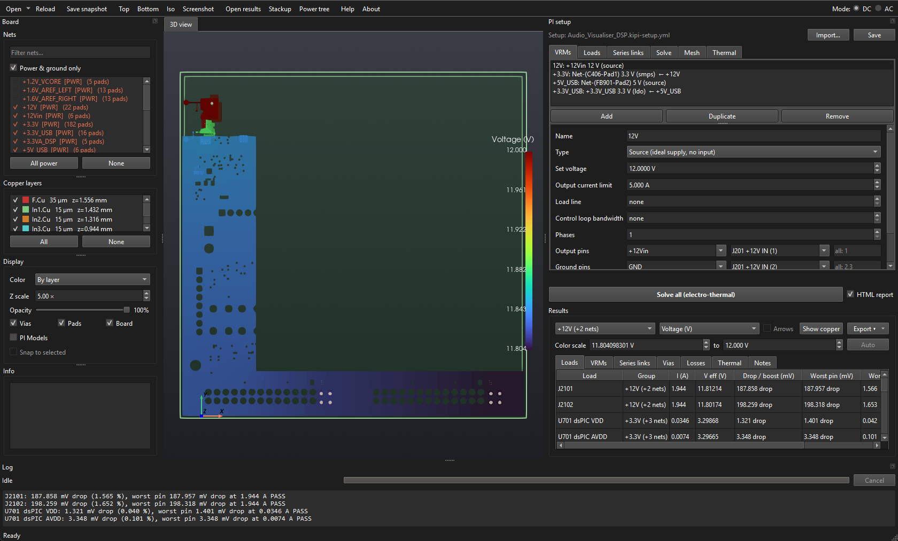
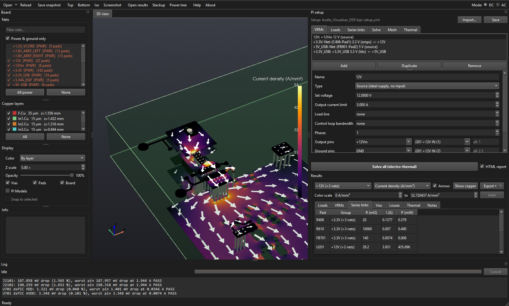
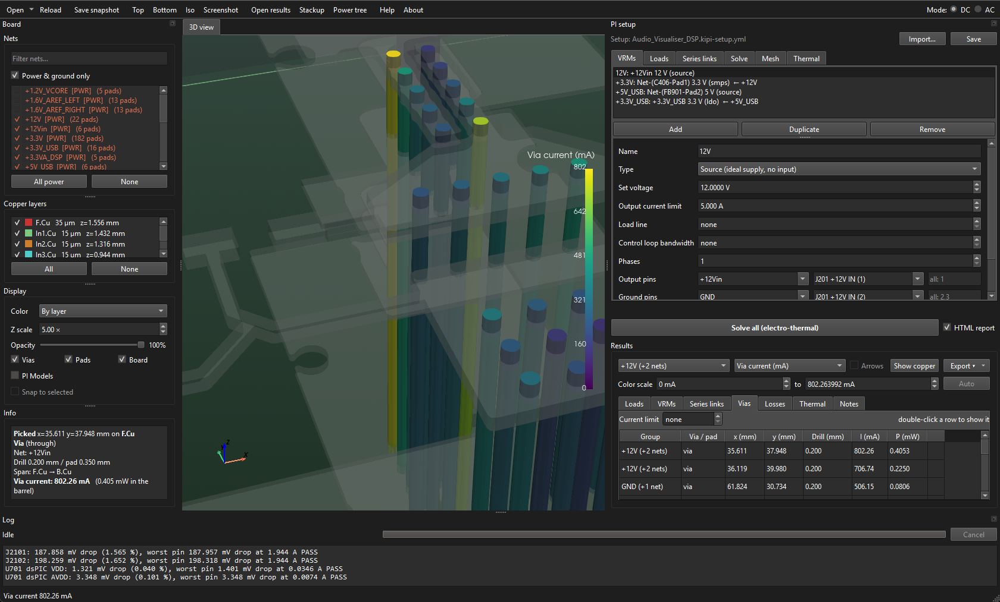
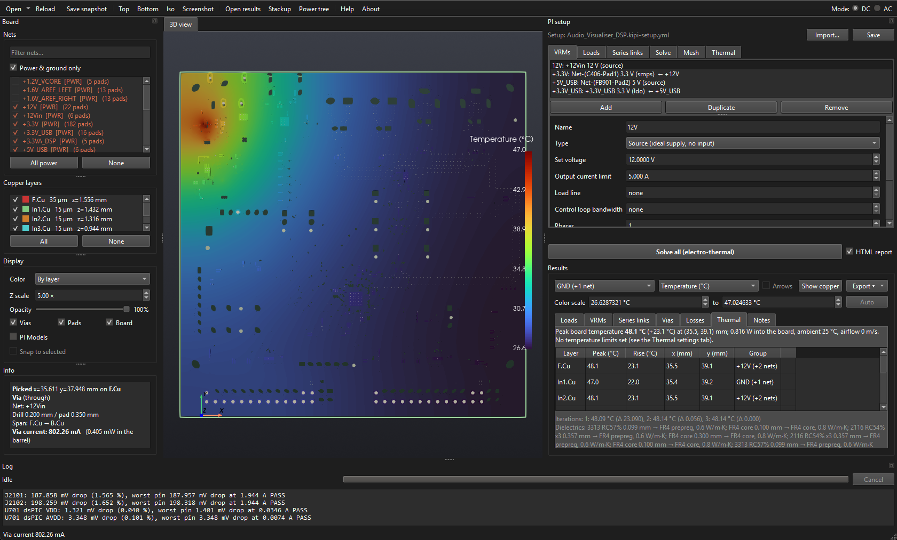
Results tables click a header to sort; again to reverse
The Voltages list beside the tabs picks how the Loads and VRMs tables show their voltages: in mV from target (the default), in % from target or in Volts. The target is the regulated voltage of the VRM driving the rail. From the target, negative is a drop below it and positive a boost above it. The web report has the same list at its top; a PDF report shows each voltage in all three.
| Tab | Columns and use |
|---|---|
| Loads | Current; the mean effective voltage (supply − ground); the lowest and highest supply pins; the tolerance; the margin, how far the pins are inside the tolerance (negative when outside, in red); and the verdict. Double-click a row to show its group. |
| VRMs | V out, I out, V/I in, input power, conversion loss, the rail's lowest voltage anywhere on its copper, current limit and PASS/FAIL; a gray row per phase under multi-phase VRMs. |
| Series links | Resistance, current and power in each part. |
| Vias | Every via and PTH barrel, highest current first. The Current limit for PASS/FAIL starts at 1 A, a placeholder; set your own, or 0 for none. Double-click a row to fly the camera to it. |
| Losses | Copper loss per group and layer, in vias and series parts, with the total and each VRM's conversion loss at the bottom. |
| Thermal | After an electro-thermal solve: the hottest copper on each layer, at that layer's own temperature, its rise and location, PASS/FAIL against the limits, the iteration history and the dielectric conductivities used, in-plane and through. Double-click a row to show its group's temperature. |
| Notes | Solve time, the nets in each group, pin group results, warnings and excluded groups. |
Load verdicts
| Verdict | Meaning |
|---|---|
| PASS | Every supply pin within the tolerance. |
| FAIL | At least one pin outside the tolerance. |
| VRM OUT OF REGULATION | A VRM feeding it, directly or upstream, is outside its input range or below its dropout. |
| NOT CONVERGED | Its group's solve did not converge; the numbers cannot be trusted. See Troubleshooting. |
| DISCONNECTED | None of its supply pins, or none of its ground pins, has a copper or series-link path to its VRM, so its current was left out of the solve. The Notes tab names the pins. See Loads not connected by copper. |
| (blank) | No tolerance set. |
Reading the numbers
- Effective voltage is what the load actually sees: its supply pins minus its ground pins. Compare it with the regulated voltage, not the raw plane voltage.
- A supply plane reading above its regulated voltage is normal with remote sense or when ground return is solved; see drop and boost.
- The lowest and highest pins are what pass or fail a load; with many pins, one far pin can fail a load whose mean looks fine. The margin says how close the nearer one is to its tolerance.
- The color scale covers the whole result; type a minimum and maximum under it to look closer.
- Losses are I²R in the copper; VRM conversion loss is the difference between input and output power.
Export and HTML report
| Export ▾ item | Writes |
|---|---|
| Tables as CSV… | One CSV per results table into a folder, plus
<name>_pins.csv: every pin each group was solved with, and its voltage and
current. |
| 3D results for ParaView (.vtm)… | The result meshes, for ParaView or other VTK tools. |
| Save results… | A .kipi-dc-results file, or
.kipi-dc-thermal-results after an electro-thermal solve, that Open
results… reloads without solving, named with the board and the time by default. It holds
JSON and NumPy arrays in a zip, which open on any computer and cannot run code, so it is safe
to share; the 3D views are rebuilt when it opens. |
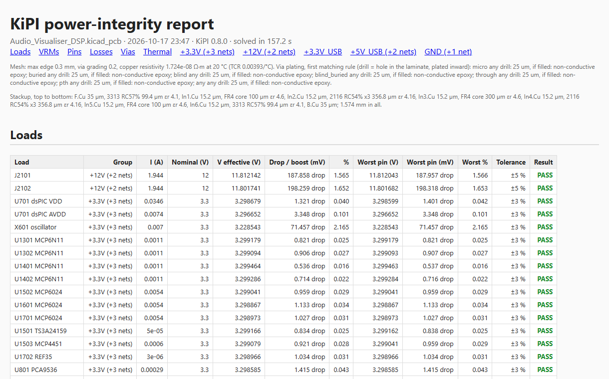
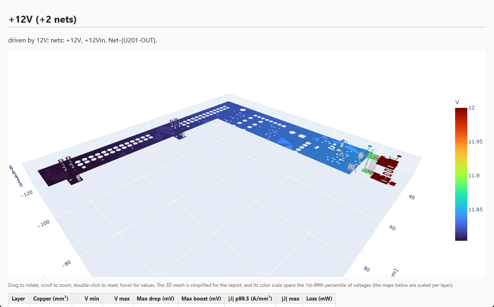
AC concepts
What the AC analysis models
The AC analysis computes the PDN impedance seen from a probe, a device's supply and ground pins, looking out into the board over a range of frequencies. A device that draws a changing current I from a PDN of impedance Z sees its supply move by about I·|Z|, so keeping |Z| below a target impedance keeps the supply ripple within tolerance.
A solve covers one rail (the nets its VRM drives, plus nets joined to them by series links) against one ground net. It includes:
- The copper, field-solved: plane and trace resistance (with skin effect), the spreading inductance of planes, the capacitance between facing rail and ground copper, cavity resonances, and the inductance of vias and their mounting.
- Capacitors between the rail and ground, each as a series R-L-C from its model. Only the part's own ESL is entered; its mounting (pads, vias, planes) is simulated.
- Series links as their resistance plus ESL.
Capacitors that sit between the rail and ground but have no model are left out, and the results notes list them.
AC setup tabs
Switch Mode to AC. The setup dock becomes the AC setup; it edits the same setup file as DC.
VRMs and Series links tabs shared with DC
The same VRMs and series links as the DC setup; edits in one mode show in the other. Every VRM field can be edited in either mode; the tooltip of a field only DC uses says so. In AC:
- A VRM's output net (and ground pins) define a rail and its default ground for the Rail picker.
- A series link adds its ESL to its resistance. A link leading off the rail to a net that is not part of the solve is left out, with a note. A 0 Ω link with no ESL merges the two nets.
Capacitors tab RLC models and which parts use them
A model is a capacitance, ESL and ESR shared by a group of identical parts. All three are required.
| Control | What it does |
|---|---|
| Models from values | Creates one model per distinct value
among the capacitors that have none yet, named after the value, with the capacitance read
from it, and the voltage rating when the value gives one (10uF 6.3V X5R).
Enter ESL and ESR yourself. |
| Capacitance | Per part, with no DC bias. For a ceramic, enter its Voltage rating to estimate DC bias, or enter the effective value at the rail's voltage if the datasheet gives it. |
| ESL | The part's own inductance (datasheet), not including mounting. |
| ESR | Per part. |
| Import SPICE model… | Uses the part's SPICE model from its maker (see below). Pick its subcircuit from the file; the dialog shows the values fitted to it before you accept. The subcircuit is saved in the setup, so the setup file carries it. With Use the SPICE model's impedance ticked, the AC and Coupled Noise solves take each part's impedance from the model at every frequency, which follows a ladder model's shape where a series RLC cannot. The capacitance, ESL and ESR are then fitted to it and locked, for the tables and reports: C and ESL from its reactance 30 times below and above its self-resonance, and ESR its resistance at resonance. DC bias, aging, temperature and tolerance scale every capacitor in the model alike. Untick to use the values as you type them; the model is kept, and ticking again puts its fitted values back. |
| Voltage rating | The part's rated DC voltage. Class II ceramics (X5R, X7R, X6S…) lose capacitance with DC voltage; with a rating, each part's capacitance is derated by the DC voltage across it: what the last DC solve found across its pads, or else the rail's VRM regulated voltage. The Results notes and the HTML report give the voltages and the capacitance left. Models from values fills it in for values naming a class II dielectric. Leave it not set for polymer and electrolytic parts; a model with a C0G dielectric is never derated. |
| Dielectric | The ceramic dielectric (C0G, X7R, X5R, Y5V…), for
aging and temperature. Picking one fills in its typical aging rate, and with a
Temperature in the Sweep tab the capacitance follows the dielectric's typical
curve from its rated value at 25 °C (X7R: −4 % at 85 °C and −12 % at 125 °C; Y5V: −75 %
at 85 °C; C0G: flat). Leave it unset for polymer and
electrolytic parts, which are then not aged. Models from values reads it from the
value (NP0 counts as C0G). |
| Aging | Capacitance lost per decade of hours operated, in % (X7R about 2, X5R about 3, Y5V about 7; C0G does not age). Enter the datasheet's rate if it gives one. Used when Aging is ticked under Capacitor derating in the Sweep tab. |
| Manufacturing tolerance | Optional: the part's capacitance tolerance, in % of nominal, from its datasheet or its value code (J is ±5 %, K ±10 %, M ±20 %). Used when Manufacturing tolerance is ticked under Capacitor derating in the Sweep tab, which solves the model at the low end of it. Leave it not set for a part whose entered capacitance is already the figure you want simulated. |
| Kept at rating | How much of its capacitance the part keeps at its rated voltage, from the datasheet's DC bias curve (40 % by default; often 30 to 50 %, and less for smaller cases). Between 0 V and beyond the rating, the capacitance follows C / (1 + k (V / Vrated)1.5), a typical X5R/X7R curve's shape. |
| Filter box | Narrows the parts table by reference, value, footprint, net or model. |
| Parts table | Every capacitor (reference C…) whose pads
are all on ticked nets, across two nets, with its footprint (hover for the library).
Tick a part to give it this model; it moves from any other model. Grayed rows already
belong to another model, named in the last column. Click a column header to sort by it. |
| Tick same value / footprint / value + footprint | Ticks every part matching the selected row: the same value, the same library footprint, or both (e.g. only the 0402 100 nF parts, whose ESL differs from the 0603 ones). |
| Tick shown / Untick shown | Applies to every row the filter shows. |
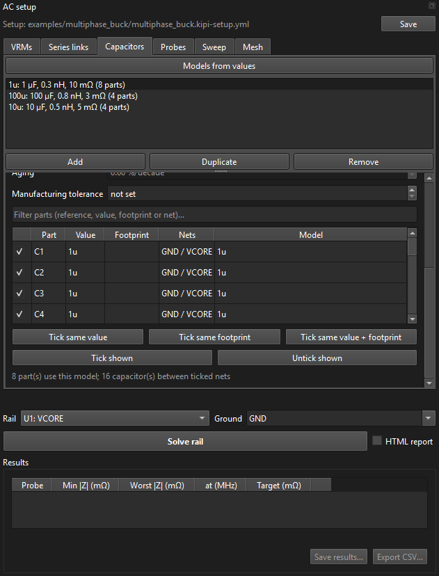
Probes tab where the impedance is measured, and its target
| Field | Meaning |
|---|---|
| Name | Shown in the plot legend and the table; follows the supply part by default. |
| Supply pins | The device's power pins. Picking a part also picks its ground pins if it has any. |
| Ground pins | On the ground net being simulated, or on another ground a series link ties to it: an analog ground joined to GND by a net tie, a 0 Ω resistor or a ferrite. Add that part as a series link between the two grounds; the solve then meshes both grounds as one return, with the link in it (a link with no resistance or ESL joins them outright). |
| Target | Flat, up to a frequency, or Custom (piecewise linear). |
| Target |Z| / Target frequency | Flat target: PASS if |Z| stays at or below it from the VRM's control loop bandwidth up to the frequency (none: to the end of the sweep). |
| Calculator… | Opens the Target Impedance/Frequency Calculator. |
| Custom points | Frequency/|Z| corner points, joined by straight lines on the log-log plot. Below the first point the first |Z| holds, above the last the last holds. Add point adds one a decade above the last; ✕ removes one. |
| Load step (ΔI) / Load step slew rate | Optional. How far and how fast the device's current steps. With both, and the VRM's control loop bandwidth, the solve estimates the rail's transient response at this probe. The calculator fills them in, and so does a load model with a load step. |
From DC load adds a probe on the same supply and ground pins as a DC load picked from its dropdown. The dropdown also lists the input of every LDO and switcher, one entry per phase (e.g. VR4 phase 2 input): a regulator's input pins load the rail feeding it just as a device does.
Model ▾ applies a load model's targets to many probes at once, adds a model's probes for the parts ticked, or exports a part's model.
A rail can have several probes, e.g. one per device; they are all solved together and each sees the others as open circuits.
From package model… reads a device's package model and adds probes on its die.
Packages tab package PI models, for probes on the die
Vendors give a device's package as an N-port Touchstone file (.sNp): ports
on the package balls, where it meets the board, and ports on the die. Add (or
From package model… in the Probes tab) reads one, Touchstone 1 or 2 with S, Y or Z
data, and asks which board part it is the package of. The whole file is kept in the setup
file. Port names found in the file's comments (! Port[1] = VCCINT_BGA) connect
the ports: a port named for one of the part's nets goes to that net, on the die if its name
says so (die, bump), else to the PCB. Connect ports by their names
does that again.
In the ports table, each port connects to:
- PCB pins: the part's pins on its Net (the Pins listed, or every one) against its pins on the Ground net. The solve joins the package to the board there.
- Die probe: a probe in the Probes tab, named after the port, on the rail of its net. It has no place on the board: its impedance is looked into at the die, through the package. Its targets and load step are set like any probe's. Removing it leaves the port open.
- Open or Shorted: left unconnected, or shorted to its reference.
The package also loads the board's own probes, which see its die through the balls. PCB ports on another rail are left open when this rail is solved. Outside the file's frequency range the model is held at its first and last frequency, and the solve says so. The Coupled Noise mode shows a die probe's ripple at the part's pins, without the package.
Targets and the VRM bandwidth
The AC solve leaves the VRM out of circuit: it gives the open-loop PDN impedance, which keeps rising toward low frequency. In the real circuit the converter's control loop holds the rail below its bandwidth. So the rail's VRM needs a Control loop bandwidth before the rail can be solved, and a probe's target (flat or custom) applies only from that frequency up:
- the plot draws the target only above the bandwidth, and marks the bandwidth with a dotted line;
- PASS/FAIL, the worst |Z| and the margin only look above it. Without a target, the worst |Z| is the highest above the bandwidth;
- the cursor shows "none here" below it.
Fallback: if the bandwidth is at or above a flat target's frequency, or above the whole sweep, no frequencies are left to judge. That probe's target is then judged over its whole range, and a note in the results says so.
Target Impedance/Frequency Calculator
Works out a flat target from the device's transient spec:
- DC load: the DC load whose tolerance and current the copy buttons use. A load on the probe's own supply and ground pins is used directly. Otherwise the dropdown offers the loads on the probe's part: supply pins on the same footprint, and ground pins too where the load has them. An LDO's or switcher's input pins count as a load too: its Input range is the tolerance, and its input current and the DC drop at its input pins come from the last DC solve.
- AC voltage tolerance: how far the supply may move during a load transient, e.g. the AC part of a ±3 % spec on a 0.9 V rail: 27 mV.
- Copy tolerance from DC load fills the AC voltage tolerance from a DC load's tolerance: ± its tighter side, from the voltage of the VRM feeding it (2 % for -2 % / +5 %). A DC tolerance is the whole budget, and the DC drop uses up part of it, so lower the value if the AC part is smaller.
- Copy AC tolerance from DC load fills it from the load's own AC tolerance, where it has one (it is greyed out otherwise): ± its tighter side. That is already the swing allowed about the DC voltage, so there is no DC drop or VRM accuracy to subtract from it.
- Subtract DC drop at the load takes the DC drop the copper causes at the selected load's own pins off the AC voltage tolerance, so what is left is the budget for the transient. It reads the last DC solve: its effective voltage there (supply pins minus ground pins) against the target voltage of the VRM driving it, so solve the power tree on the DC tab first — without a result for that load the button stays disabled and says so. A drop uses up room below the target; a load above it (a remote-sensed VRM raises pins near it) has its boost taken off the room above. Each click subtracts again.
- Subtract VRM DC accuracy takes the DC accuracy of the LDO or switcher driving the probe's rail off the AC voltage tolerance, as the output may already sit that far from its regulated voltage. After Copy tolerance from DC load, each side of the accuracy comes off the same side of the load's tolerance, and the AC tolerance is the smaller room left: a load allowed -5 % / +3 % of 1 V behind a VRM accurate to -3 % / +1 % has 20 mV left on both sides. A value typed in has no sides, so the larger side of the accuracy comes off it (30 mV here). It shows a menu when several VRMs drive the rail; each click subtracts again.
- Load step (ΔI): the size of the current step.
- Copy current from DC load fills the load step from a DC load's current, a step from no load to all of it. Lower it if the device's current steps by less.
- Load step slew rate: how fast it steps, A/µs; 10 A/µs until you change it.
Then Ztarget = VAC / ΔI, flat up to ftarget = 1 / (π · trise), with trise = ΔI / slew rate. Use for probe fills the probe's target fields and its load step (for the transient); the inputs are remembered for next time, and a probe that has a load step opens the calculator with it. The target applies above the VRM's control loop bandwidth (Targets and the VRM bandwidth).
The target impedance method was introduced by L. D. Smith, R. E. Anderson, D. W. Forehand, T. J. Pelc and T. Roy, "Power Distribution System Design Methodology and Capacitor Selection for Modern CMOS Technology," IEEE Transactions on Advanced Packaging, vol. 22, no. 3, pp. 284–291, Aug. 1999.
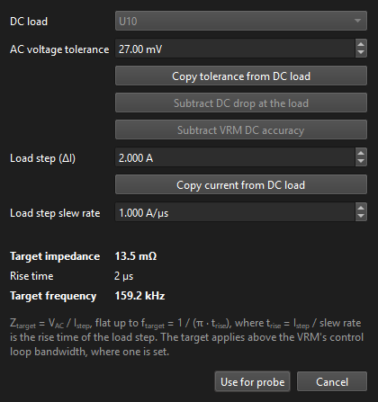
Sweep tab
| Field | Meaning |
|---|---|
| Start / Stop | Frequency range. |
| Points per decade | Resolution of the plotted curve. Cheap: the parts are evaluated at every point. |
| Field solves per decade | How often the copper itself is solved; in between, its response is interpolated (smoothly, it varies slowly). Every point solves the copper at each sweep frequency: exact and slowest. Raise this if sharp plane resonances look under-resolved. |
| Capacitor derating | DC bias, manufacturing tolerance, temperature and aging, grouped together. The results and the report list each one and whether it was applied (and why not: unticked, or no model on the rail has what it needs); the report's capacitor model table gives each model's derated capacitance and the self-resonance it moves to. |
| DC bias | Ticked (the default), the capacitor models with a Voltage rating are derated by the DC voltage across each part. Untick it to solve with every model's capacitance as entered. |
| Manufacturing tolerance | Ticked, every capacitor model with a Manufacturing tolerance is solved at the low end of it: the tolerance is subtracted, so a ±10 % model keeps 90 % of its capacitance and a ±20 % model 80 %. That is the worst case for a PDN, where too little capacitance raises the impedance. Models without a tolerance are unchanged. This multiplies with the DC bias estimate, aging and temperature. Off by default. |
| Temperature | Not modeled (the default): copper at 20 °C and capacitors at their rated values. Fixed: the whole board at Board temperature. From DC thermal co-simulation: each copper triangle and capacitor at the temperature the last DC solve with thermal co-simulation found there, on its own copper layer; DC results opened from a file work too. Without one, the AC solve uses the Board temperature and says so. The copper's resistivity follows its temperature coefficient (from the DC settings), and models with a dielectric follow its temperature curve. |
| Board temperature | The temperature when Fixed, and where the thermal co-simulation gives none. |
| Aging | Ticked, every capacitor model with a dielectric loses its aging rate for each decade of Hours operated past 1000 hours (the usual reference age of the rated capacitance): an X7R part at 2 %/decade keeps 96 % after 100,000 hours. This multiplies with the DC bias estimate. Off by default. |
| Hours operated | How long the capacitors have aged, in hours (8760 a year; 87,600, ten years, by default). Heating a ceramic past its Curie point, as in reflow soldering, restarts its aging. While aging is ticked, a slider under it sets the hours from 1000 to 1,000,000 on a log scale, with the time in years beside it. |
Mesh tab
| Field | Meaning |
|---|---|
| Max edge | Largest element, mm. |
| Via grading | Element growth per mm away from plated holes. |
| Min edge (at holes) | Element size at plated holes. The mesh here decides the via and mounting inductance. |
| Grade only near the rail | On by default. The mesh is refined only at plated holes within five board thicknesses (at least 5 mm) of the rail's copper or a part on it. Far ground vias carry almost none of the rail's current, but grading them can be most of the mesh on a board stitched with many. All the copper is kept either way, so the low-frequency return still takes every path it has. On an 8-layer board it halved the solve and changed the impedance by under 0.002 %. |
The via plating rules come from the DC setup's Mesh tab; copper resistivity and the dielectric Loss tangent and Default εr from the Stackup window.
Solving a rail
Rail, Ground and Solve rail
Below the tabs: Rail lists each VRM and its output net; Ground lists the ticked nets with grounds first, defaulting to the VRM's ground pins' net. Solve rail saves the setup and runs the sweep; problems that stop it are listed in red above. The log shows the field solves as they go.
Click Report next to Solve rail to write
<board>_<rail>_ac_report_<date>_<time>.html (or, with
PDF chosen, .pdf) of the shown rail's results next to the board, once
it is solved or its saved results are opened; the report opens when it is written, and
Open report opens the shown rail's report again later. See AC report.
Each rail keeps its last result: switch Rail to look at another rail's curves without solving again. If you change the rail while a solve is running, the result is kept for its own rail and the notes say so.
AC results
Impedance plot and cursor
The Impedance tab in the middle plots |Z| against frequency on log-log axes: one solid curve per probe and, dashed in the same color, its target. Hovering shows every probe's |Z| at the frequency under the mouse in the line above the plot.
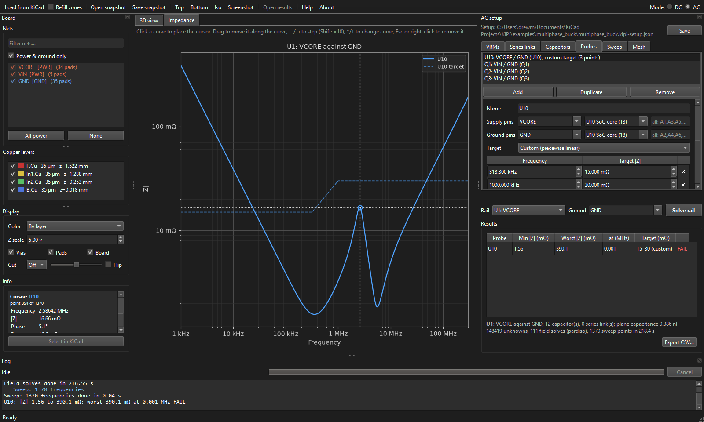
Cursor
| Action | Input |
|---|---|
| Place on the nearest curve | Left-click |
| Move along the curve | Drag, or ← → (with Shift: 10 points) |
| Switch curve | ↑ ↓ |
| Remove | Esc or right-click |
The Info box shows the cursor's frequency, |Z|, phase, R and X, the reactance as an equivalent L or C, the target there with PASS/FAIL and the margin in dB (positive is below the target), and every other probe's |Z| at the same frequency.
Screenshot… in the toolbar saves the plot as a PNG while its tab is showing.
Board map
The Board map tab shows the solve from above, as in the HTML report: the solver's mesh of the rail (copper colored) and its ground (blue-gray), the board outline, the probes as red stars, and the capacitors in the model as dots, one color per capacitor model. Capacitors between the rail and ground that have no model, and so are left out, are crossed. The view is fixed, always fitted to the board.
The map fills in while the rail solves: the parts as soon as the solve starts, then the mesh once it is built. The tab comes to the front for the solve; the Impedance tab comes back to the front when the results arrive.
| Control | Does |
|---|---|
| Layer | The copper layer whose mesh is shown, or All layers (the rail drawn over its ground). |
| Mesh edges | Draws the triangles' edges. Untick it to see the copper alone. |
| Hover a part | Its reference, value, side and capacitor model (C, ESL, ESR). |
The map belongs to each rail's result, so switching Rail shows that rail's map, and saved results keep it. Results saved by KiPI before 0.7.2 have no map.
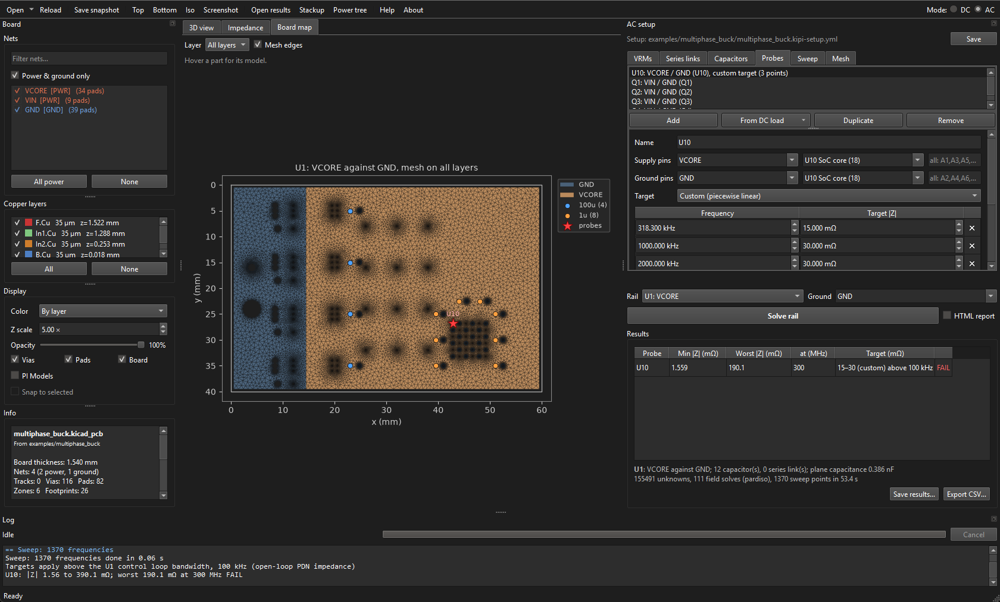
Transient the estimated response to each probe's load step
The Transient tab estimates what the rail does at each probe that has a Load step and slew rate: the load steps up by ΔI, holds until the rail has settled, and steps back down. The top plot is the load current. The lower plot is the rail's deviation from its DC value: the undershoot when the load steps up and the overshoot when it steps back down. Each probe's step is worked out on its own, with the other probes drawing nothing extra. A circle marks each peak, and the legend gives them in mV. Dashed lines at ± target |Z| × ΔI show the AC tolerance a flat target stands for (Ztarget = VAC / ΔI).
How it is worked out: the AC solve gives the open-loop impedance, with the VRM out of circuit, and a step into that alone would never recover. So the converter's loop is closed again from its Control loop bandwidth: the VRM drives the rail from its voltage error with a typical proportional-integral compensation, crossing over at the bandwidth with about 60° of phase margin. Above the bandwidth the rail sees the PDN's own impedance; at DC the loop holds it exactly (the DC solve gives the DC value). The load current's spectrum times that closed-loop impedance, back in time, is the response. Only the bandwidth comes from your setup, so treat the result as an estimate. The converter's real compensation, its output impedance and any load-line will change the slow part, while the fast part (ESL, plane and via inductance, capacitor resonances) comes from the solve. A linear model mirrors itself, so the overshoot on release matches the undershoot on the step.
| Control | Does |
|---|---|
| 20 MHz limit | Shows the rail as an oscilloscope with its 20 MHz bandwidth limit on would: through a single pole, 3 dB down at 20 MHz. Fast spikes and ringing shrink to what such a measurement sees, and so do the figures in the legend. The results table and the report keep the full bandwidth. |
| Toolbar | Zoom to a rectangle, pan, step back and forward, home. The fast edges last nanoseconds and the loop's recovery tens of microseconds, so zoom in to see the spikes. |
| Hover | The time, and each probe's load current and deviation there. |
A probe with a load step but no VRM bandwidth gets no estimate, and a note says so. A note also flags a load step that rises faster than the time step or the sweep covers, and a rail that has not settled before the load steps back down.
Results table and notes
| Column | Meaning |
|---|---|
| Min |Z| | Lowest impedance in the sweep. |
| Worst |Z| / at | With a target: the point where |Z| comes closest to, or furthest over, the target (within the target's frequency range). Without one: the highest |Z| in the sweep. |
| Target | The flat level, or the custom mask's range. |
| Undershoot / Overshoot | For a probe with a load step: the estimated dip when its load steps up and rise when it steps back down, at full bandwidth (see Transient). |
| Verdict | PASS if |Z| is at or below the target everywhere it applies. |
Below the table, the notes give the rail's nets and ground, the number of capacitors and
series links included, the total plane capacitance, the solve size and time, capacitors left
out for having no model, and any warnings. Export CSV… writes |Z|, R and X of every probe
at every frequency. Export model writes the selected probe as either sampled
Touchstone Z1P or a fitted-pole HyperLynx PLS one-port file. Each probe is exported
separately because the solve stores driving-point curves, not mutual impedances between probes.
Save results… writes every rail solved so far to a
.kipi-ac-results file (named with the board and the time by default);
Open results… in AC mode brings them back, each
under its VRM in Rail. Rails whose VRM is no longer in the setup are left out.
AC report
Report writes
<board>_<rail>_ac_report_<date>_<time>.html of the shown
rail's results next to the board; the time stamp keeps every report. Like the DC report, it is a single offline file you can email. It holds:
- a summary and the probe table: pins, minimum and worst |Z|, the target, the margin in dB at the worst point (positive passes), PASS/FAIL, and an overall verdict;
- an interactive impedance plot of |Z| at every probe, with the targets dashed. Drag to zoom, double-click to reset, hover for f, |Z|, R and X. Click a legend entry to hide or show a curve. The grey dotted curves, hidden at first, are each capacitor model on its own (one part, without mounting), useful for matching dips to capacitor banks;
- a board map seen from the top: the board outline, the rail's copper on every layer merged, the probes as stars and each capacitor colored by its model. Capacitors left out for having no model show as grey crosses;
- for probes with a load step, the transient: a table of each load step, its slew rate and rise time, the undershoot and overshoot and ± target × ΔI, and the plot of the load current and the rail's deviation;
- the capacitor models (C, ESL, ESR, self-resonance, how many parts and which), the series links, the sweep, mesh and copper settings, and the solver's size, backend and time;
- notes: capacitors left out and any warnings.
With PDF chosen, the report is a .pdf with the same sections, the
impedance plot and board map as images (probes and targets; no hover or per-model curves),
and the User notes box as a form field to type in and save. If a PDF can't be made,
KiPI writes the HTML report instead and the log says why.
If the report can't be written, the log says why; the solve's results are kept either way.
Reading an impedance curve
- Falling at −20 dB/decade (|Z| ∝ 1/f): capacitive. At the low end this is the bulk capacitance; since the VRM is not modeled, the curve keeps rising toward low frequency.
- Dips: series resonances, where a capacitor bank's C and its ESL plus mounting inductance cancel. The depth is set by ESR.
- Peaks between dips: anti-resonances, where one bank's inductance resonates with the next bank's capacitance. These are usually where a target fails. Fix them with more or lower-ESL parts, more value overlap between banks, or extra damping (ESR).
- Rising at +20 dB/decade (|Z| ∝ f): inductive. The capacitors' ESL and their mounting (pad, via and spreading inductance) dominate. Place the cursor here: Info shows it as an equivalent inductance. Shorter, wider connections and more vias lower it.
- Sharp peaks at high frequency: plane-pair cavity resonances. Their frequencies come from the board's dimensions and stackup.
- Phase near −90° is capacitive, near +90° inductive, near 0° resistive.
Coupled Noise concepts
A switcher as a noise source
Coupled Noise mode (Ctrl+3) treats a buck or boost switching regulator as an aggressor: from a few of its parameters and the board's layout it builds the converter's waveforms (the switch node, the inductor currents, each capacitor's ripple current and the rails' ripple voltage), then couples them onto the signal nets you name, the victims, and compares the noise at each victim's receiver with its noise margin. Three coupling paths are modeled: capacitive, the switch node's copper charging the victim's traces through their mutual capacitance; inductive, the current loops through each input and output capacitor inducing a voltage along the victim's traces through their mutual inductance, vias included: the loops' via drops and the victim's own vias between the layers its traces use are vertical conductors, so a victim via beside a hot loop's via picks up its dI/dt; and common (shared-ground) coupling, the switching currents' return through shared copper leaving the ground under the victim's driver at another voltage than its receiver's (the copper's resistance: the inductive part of that is the victim's own loop picking up the field, which the inductive path counts).
The board model solves the converter's input and output rails and their ground with AC mode's field model: the switching currents divide among all the capacitors on the rails through the copper's own impedance, the rails' ripple is taken at the switching device's pins, and the ground difference between each victim's ends gives its shared- ground coupling. Each capacitor's hot loop is traced through the same copper (below). It is the slow part of a solve (comparable to an AC solve of the rails); untick it in Settings for a quick look.
An aggressor is one of the setup's VRMs of type Switcher (made in DC or AC mode). Its input rail and regulated voltage give the input and output voltages, and from them the topology: an input above the output is a buck, below it a boost. Its output current is the DC setup's loads on its output rail, unless you enter one.
The hot loop is the path the switching current takes on every edge: in a buck, from the input capacitors through the high-side switch and back from the low-side switch to the capacitors' ground; in a boost, the same through the output capacitors. With the board model on, KiPI traces each capacitor's loop through the copper itself: a conduction solve on the rails' and ground's mesh of one ampere from the capacitor's rail pad to the switch's pins, and another from its ground pins back to the capacitor, give where the current flows in the rail's pours and traces and in the ground's copper, vias and plane. That current distribution, cell by cell and via by via, is the loop: its inductance comes from the partial inductances of every piece carrying its share of the current, with the plane under the device taking image currents, and the same pieces are the sources of the inductive coupling onto victims. (The DC distribution is the path of least resistance; at the ringing frequency the return in a solid plane gathers under the forward path, which the plane's images carry, and the plane's own spread current counts only by what the plane lets through at each frequency.) With the board model off, the loop is drawn straight between the pads you name, as wide as the copper along it, and the notes say so. With the switch node's capacitance to ground (the switch's Coss plus the switch-node copper's capacitance to the neighbouring planes) the loop's inductance sets the ringing on every edge, at f = 1 / (2π√(L·C)). The ringing's current flows round the hot loop too, so the input capacitors of a buck (the output capacitors of a boost) carry it, and it couples onto victims through their loops.
The two edges do not ring alike. When the control switch turns on (a buck's high side, a boost's low side) it takes the inductor current from the other switch's conducting body diode: a hard edge, which must also sweep out the diode's reverse-recovery charge (Qrr). The diode snaps off with that current in the loop, and the node rings. When the control switch turns off, the inductor current itself carries the node across into the other switch's body diode, whose clamp takes the ringing's energy: a soft edge, which overshoots once and settles. So a buck rings on its rising edge and a boost on its falling one. At light load the current may be too small to carry the node across within the controller's dead time; the next switch then turns on part way and finishes the edge hard. The results notes say which edge is which.
The inductor is a source too: its winding is a magnetic dipole along its axis, and an unshielded (open drum) part's field reaches the board around it. KiPI stands the winding in as a loop of its turns at the body, normal to the winding axis you set, with the turns from the inductance and the body's size, carrying the inductor current; it couples onto victims like the hot loops. A shielded (or moulded) part keeps most of its flux in its shield: its equivalent loop is smaller and carries a tenth of the turns, so its field is weaker and falls off sooner. The winding's sense is not on the board, so the sign of its coupling is taken positive.
A victim that crosses a split in its reference plane, a slot, a gap between two planes, the edge of a pour, or a change from one plane to another, has its return current detour round the split. Each crossing is found where two joined pieces of the victim have different copper under them, and the detour's inductance (Johnson's estimate for a trace crossing a slot, 0.197 nH/mm × D × ln(D/w), D the detour and w the trace width; through the nearest capacitor joining the two nets where the reference changes plane) goes in series with the trace there. The cross-sections already give a piece over a gap the capacitance and inductance of the far copper, and the inductive coupling counts the loops' real current round the gap rather than a solid plane's images. The results say where each victim crosses and what the detour adds.
The fields the sources make are kept for the 3D view and for a near-field report: the H field of every current loop by Biot–Savart from the same elements the inductive coupling uses, with the plane's images (and its own current, by what the plane mirrors at each frequency), and the E field of each switch node from its copper's charge (its capacitance to the nearest plane, patch by patch) and that charge's image. See Fields in 3D under the results.
The waveforms are exact Fourier series of piecewise-linear shapes (trapezoids and triangles) up to a highest frequency set by the edges and the ringing, so nothing is time-stepped and a solve takes well under a second.
Coupled Noise setup tabs
Aggressors
Add makes an aggressor for a switcher VRM and fills its phases from the board. The top of the form holds what all phases share:
- VRM and Topology (Auto from the voltages, or Buck or Boost). The line below shows the operating point: voltages, output current and duty cycle, or what is missing for one.
- Input voltage and Output current: blank uses the VRM's and the DC loads'.
- Switching frequency, Rise time and Fall time of the switch node. Phases are interleaved evenly, 360°/N apart.
- Duty cycle: blank computes it from the voltages, raised by the losses you enter.
- Least ringing damping: the hot loop's resistance alone barely damps a real switch node; its switches' output capacitance, reverse recovery and radiation take energy too, and measured ringing usually dies within five to ten cycles. The ringing is damped at least this much (ζ, default 0.05); 0 uses the loop's resistance alone.
- Soft edge damping: the least damping of the soft edge, the one the inductor current carries into a body diode's clamp (ζ, default 0.5: one overshoot, then settled). Set it to the least ringing damping to ring both edges alike.
- Ripple at AC probes: tick any of the AC setup's probes to see this aggressor's ripple there. The ripple is the voltage between the probe's rail and ground pins, from the board model, so the board model must be on. A probe has to be on the aggressor's input or output rail, or on a net that a series link joins to one; any other probe is noted and left out.
Below, one phase at a time: pick it in the phase list, or Add phase / Remove phase. Fill from VRM replaces the phases with one per VRM phase, read from the board: the switching device's pins from the VRM's, the inductor between the device and the rail, its value, the switch node, and the capacitors from each rail to ground, each given to the nearest phase. Each phase has:
- Inductor, Inductance and DCR.
- Winding axis and Shielded inductor: how the inductor's winding sits (vertical for a flat SMD drum or moulded part, along or across the part for one wound on a rod lying flat) and whether a shield closes its flux, for its stray field (see the concepts). An unshielded part's whole winding reaches the board around it; a shielded part's field is weaker and falls off sooner.
- Switch node: the net between the switching device and the inductor.
- High-side pins and Low-side pins (pin pickers): the switching device's pins on the rail its hot loop is fed from (VIN for a buck, the output for a boost) and its power ground pins. A discrete design may name a different part for each.
- Input capacitors and Output capacitors: tick the capacitors on each rail this phase uses. The ripple current is shared among them by their impedances.
- Coss, High-side Rds(on) and Low-side Rds(on) from the datasheet, all optional: without them typical values are used and the ringing is approximate.
- Qrr: the reverse-recovery charge of the body diode the hard edge switches off (a buck's low-side FET, a boost's rectifier), from its datasheet. Not set: 5 nC, a low-voltage MOSFET's after a short dead time; enter 0 for a Schottky or GaN switch. More charge rings the hard edge higher.
- Package inductance: the loop inductance inside the device, added to the board's.
Victims
Add makes a victim of the first signal net not yet one, with its driver and receiver guessed as the net's two pads farthest apart. For each victim:
- Net and an optional Name.
- Type: what drives and loads the net. CMOS push-pull, open drain (held only by its pull-up), series or parallel terminated, a differential (LVDS) leg, a high-impedance analog input, or High impedance (undriven): a tri-stated or floating net, held by nothing but its inputs' leakage. A type fills in the values below; editing them makes it Custom.
- Driver pins and Receiver pins (pin pickers): where the trace is driven and where its noise is judged. Blank guesses them.
- Driver resistance (driving high, or an open drain's pull-up), Driving low (where it differs: an open drain's switch, 20 Ω; blank is the same as driving high), Receiver resistance, Receiver capacitance and Termination (a parallel termination at the receiver).
- Logic level: the family's supply. Held high, the line sits at the supply through the driver's resistance into the receiver and termination; held low, at ground. The noise margin is the smaller gap from those levels to the family's JESD8 VIH and VIL: 800 mV for lightly loaded 3.3 V CMOS. Noise margin overrides it, putting each threshold that far from its level.
With PI Models shown, each victim's driver and receiver pins are marked in orange in the 3D view ("victim driver", "victim receiver"; the guessed ones where they are not set). Selecting a victim highlights both; clicking either marker selects the victim.
Capacitors
The same capacitor models as AC mode, edited here too. A ticked capacitor without a model is taken at its value from the board with a typical ESR and ESL, and the results say so.
Settings
- Highest frequency: the highest harmonic kept. Blank: ten times the faster edge's corner frequency, 1/(π·rise time), or three times the ringing, at most 3 GHz.
- Harmonic limit: the most harmonics of the switching frequency kept.
- Dead time: how long the inductor current has to carry a soft edge across (default 20 ns). A soft edge that would take longer (C_sw·V/I, at light load) is finished hard by the next switch, at the entered edge time. 0 lets the current take as long as it needs.
- Periods shown in the waveform plot.
- Victim segment: victim traces are cut into pieces this long, each with its own cross-section of the copper around it (default 0.5 mm).
- Coupling window: how far either side of a victim trace copper is taken into its cross-section (default 3 mm). Switch-node copper further away does not couple.
- Board model: solve the rails and ground's copper (above), and trace the hot loops through it. Off, the capacitors share the current by their own impedances, the hot loops are drawn straight between the pads and there is no shared-ground coupling.
- Field solves per decade: copper solves per decade of the harmonics; the board's response in between is interpolated (default 10).
- Scan radius: the scan looks at signal nets with a trace this close to the aggressor's parts (default 10 mm). Scan: solve in full: how many of the worst estimates are solved in full (default 10). Scan: victim type and logic level: what scanned nets are solved as and judged with, as their real drivers are not known. The default type, High impedance (undriven), is the worst case for capacitive coupling. A net that is a victim already keeps its own type. Custom driver uses Scan: driver resistance instead.
Solving an aggressor
Aggressor and Solve
Below the tabs, pick the Aggressor and click Solve; problems that stop it are listed in red above. Only one aggressor is solved at a time, and each keeps its last result. Victims picks which victims a solve covers: all of them, one by name (quicker while you work on one route), or none (the aggressor's waveforms only).
Tick Scan nearby nets to also look for victims you have not named: every signal net with a trace within the scan radius of the aggressor's parts gets a quick estimate of its noise (capacitive from its distance to the switch-node copper, inductive from the full model), and the worst are solved in full as the scan's victim type, undriven by default, and its logic level (Settings). They are marked (scan) in the results table. The Scan radius slider under it sets how far from the aggressor's parts the scan looks, from 0.5 mm to 500 mm, and shows how many signal nets are inside; it is the same value as Scan radius in Settings. Scan and a chosen victim work together: name the nets you know, scan for the ones you do not.
Click Report to write <board>_<aggressor>_noise_report_<date>_<time>.html
(or .pdf) of the shown aggressor's results next to the board: the victims against their
margins, the aggressor's parasitics, its waveforms, each victim's noise by mechanism, the
scan's estimates and the notes. Open report opens it again. Save results… writes every solved aggressor to a
.kipi-noise-results file that Open results… reopens in this mode.
Waveforms and parasitics
The Waveforms tab and the results notes
The Waveforms tab beside the 3D view plots, over a few switching periods: the switch node of every phase (with its ringing), the inductor currents, each input and output capacitor's ripple current (the largest twelve), the input and output rails' ripple voltage, and the ripple at each AC probe ticked for the aggressor (Ripple at AC probes). Tick Spectrum to see each waveform's harmonics instead; hover to read the curves. With several curves in a view, a tickbox for each, in its colour, sits beside the plot: untick one to hide it. It stays hidden when you change views or solve again. Tick 20 MHz limit to see every view as an oscilloscope with its 20 MHz bandwidth limit on would: each waveform passes through a single-pole low-pass filter, 3 dB down at 20 MHz, so the ringing and fast spikes shrink to what such a measurement shows. The plot titles, the results table and the notes keep the full bandwidth's figures.
The results notes give the operating point and, for each phase, the hot loop's inductance, the switch node's capacitance to ground (Coss and copper), the loop's resistance, and the ringing's frequency and damping. They also give the peak-to-peak and RMS ripple at each AC probe ticked.
The results table lists each victim: its receiver's peak noise over a switching period, its noise margin, the share of the margin used, the coupling mechanism that dominates, and PASS or FAIL. The worst victim is selected; select one to plot its noise under Victim noise in the Waveforms tab, in volts against its ±margin (in time, or as a spectrum). By default the plot shows the Superposition, the receiver's noise from every mechanism added up, and the Driver end; tick Capacitive, Inductive or Common ground to add that mechanism's own curve. The log gives each victim's mutual capacitance to the switch node, the length of trace beside it, and its mutual inductance to the capacitor loops.
Victim held high and low plots the receiver's line as it sits: at the driver's output high (the supply, less what its resistance drops into the load) with VIH below it, and at its output low with VIL above it, with the noise on each. Each plot's title gives how far the noise reaches toward that threshold and how far away the threshold is. A victim whose driver holds the line differently each way (an open drain: the pull-up high, the switch low) is solved once per state. The verdict takes the larger noise of the two against the smaller margin.
Coupling in 3D, under the results table, shows in the 3D view where the selected victim's peak noise couples in: Superposition, or one mechanism. Each piece of its traces is colored by its share of the receiver's peak, red adding to it and blue taking from it; the shares add up exactly to the peak, so the brightest pieces are the ones to move. The common-ground share is a dot at the driver. The line under the menu gives each mechanism's share. Choose Off to go back to the board.
Hot loops in 3D, below it, draws the capacitor loops themselves: All capacitors, or one. Each is the capacitor's ripple current from its positive pad through the copper to the switching device, through the device, and back through the ground's copper, vias and plane to the capacitor (the loops through the inductor likewise), in a colour of its own with the capacitor's name at the capacitor, and cones along it pointing the way the current flows. With the board model on, the lines are streamlines of the current the solve traced through the copper, each starting at an equal share of it: where they bunch the current is densest, and where they dive down a via and run in the plane that is where the return really goes. With the board model off the loop is drawn straight between the pads. The line under the menu gives each loop's inductance and whether it was traced. These loops are the sources of the inductive noise, so a victim close to one of them, on the same side of the plane, is the one to move; the view works whether or not any victim is solved.
Fields in 3D, below the hot loops, draws a field on a slice over the board: the H field of the current loops you tick in the list (each capacitor's hot loop and the inductor's stray field) or the E field of the switch nodes, at the height entered over the top copper. Each point is coloured by its peak over a switching period, on a log scale three decades under the strongest, with arrows along the field there; tick several sources to see how their fields add up, and tick Animate to play the field through one switching period. Clicking a part or net in the 3D view adds its field to the view (and switches it to H or E as the part needs). The field shown is the alternating one, the part that couples: a plane under a loop mirrors it as it does in the coupling, and the DC part of the inductor's current is left out.
The notes and the report also give the near field 5 mm over the board: where the H and E fields are strongest, at which harmonic and from which source, as a near-field probe would find them, and a first radiated estimate at 3 m: each loop, with its image in the plane, as a magnetic dipole, the loops added as phasors, against the CISPR 32 class B limit. It counts the bare board's loops only: cables, common-mode currents and an enclosure are not modelled, so it is an indicator of which loop and harmonic would radiate most, not a compliance prediction.
The mechanisms answer different fixes. Capacitive noise comes from the switch node's dV/dt: keep victims away from the switch node's copper (or behind a plane), and drive them harder. Inductive noise comes from the hot loop's dI/dt: make the loop small and keep it over a solid plane, and route victims away from it, or on the far side of the plane. Common noise comes from the switching current's return path: give the hot loop's ground its own short return (vias next to the switching device and its capacitors) and keep the victim's driver and receiver grounds out of that path.
A capacitor on the rails without a model is taken at its value from the board with a typical ESR and ESL, and the results say so. Copper the board model reaches only through parts (a ground pad whose via misses it, say) is tied weakly for the solve and named in the results: check it, as its currents have nowhere real to go.
Step-by-step workflows
1. A first DC IR-drop check of one rail
- Tick the rail and its ground in the Nets list; untick everything else.
- VRMs tab: Add a Source on the regulator's output pins at the target voltage. Add its ground pins.
- Loads tab: Add each consumer with its current, tolerance and ground pins.
- Solve all. Check the Loads table. For a FAIL, double-click the row, choose Voltage, and click around the load's pins to see where the drop comes from.
- Switch to Current density with Arrows to find the bottleneck, change the layout in KiCad, and use Load from KiCad and Solve all again.
2. A full power tree (input → switcher → LDO)
- Tick every rail in the chain and the ground.
- Add the input as a Source (e.g. the 12 V connector).
- Add the switcher as Switcher with its efficiency, output pins (inductor), Input pins on the 12 V net, and ground pins.
- Add the LDO as LDO with its quiescent current, dropout and Input pins on the switcher's output.
- Add loads on each rail and solve. The VRMs table shows each converter's input current, which includes everything downstream, and its conversion loss.
- Set Input range and Dropout to catch a regulator starved by upstream drop: its loads show VRM OUT OF REGULATION.
3. A multi-phase regulator
- Add the VRM and set phase 1's output pins (its inductor), input pins and ground pins.
- Set Phases to the number of phases. Each new phase takes the next parts in
sequence (phase 1 on
L1andQ1gives phase 2L2andQ2), or the same parts on the next sheet of a board annotated by sheet (L101 → L201), or copies the previous phase when there is no next part. - Choose each phase in Edit phase to check its pins, and change any that are wrong.
- Set the shared target voltage, type, efficiency and sense pins once.
Each phase carries an equal share of the output current and settles at whatever voltage its copper needs. The VRM regulates its sense pins or, without them, the average of its phase outputs. The VRMs table lists each phase under its VRM: unequal phase voltages show a layout imbalance.
4. Remote sense
- On the VRM, set Sense pins to the point the feedback trace connects to (often the load's supply pins).
- For differential sensing, also set Ground sense pins on the ground net (the VRM needs ground pins too).
- Solve. The sense point sits exactly at the regulated voltage; pins nearer the VRM read above it (a boost). The tolerance check catches both directions.
- To hold several points at the regulated voltage at once (mesh remote sense), tick Mesh sense, set Sense points and pick each point's pins in turn with Edit sense point. Every point is then a fixed voltage, the VRM's current entering there.
5. Solving only part of the board
When some rails are not routed or modeled yet, open the Solve tab and untick their groups. The rest solves, with the substitutions described under Solve tab. Untick the group a Cannot solve message names to get past a setup problem while you fix it.
6. Thermal and current capacity checks
- Thermal tab: tick Electro-thermal co-simulation, set ambient and airflow, and limits for maximum temperature and rise.
- On the Vias results tab, set the Current limit per via from your fab's via current rating (it starts at 1 A).
- Solve all (electro-thermal). Read the Thermal tab for the hottest point per layer, and sort the Vias tab by current for overloaded vias.
- Use the Temperature field to see the map; double-click a Thermal row to jump to its group.
7. Designing decoupling to a target impedance (AC)
- Make sure the rail has a VRM (Source is fine), and tick the rail, its ground and any nets joined by series links.
- Switch to AC. Capacitors tab: Models from values, then enter ESL and ESR for each model from the datasheets.
- Probes tab: add a probe on the device's power and ground pins. Use the calculator for the target, or a custom mask from the device vendor.
- Solve rail. In the plot, put the cursor on the worst peak (the table's Worst |Z| tells you where).
- Change capacitor models (values, counts by re-assigning parts) or the layout, and solve again. Each probe's margin in dB shows the improvement.
- To compare rails, solve each and switch between them with Rail; each keeps its last result for the session.
Capacitors listed under "have no model and were left out" are not part of the result: give them a model or confirm they really do not belong on this rail.
8. Sharing a board and its results
- Save snapshot… stores the board; anyone with KiPI can open it with Open snapshot…, or with Open… in standalone KiPI, without KiCad or your design files.
- Keep
<board>.kipi-setup.ymlin version control next to the board. - Click Report with HTML chosen for a single file you can email: it needs nothing but a browser.
- Export ▾ → Save results… (DC) or Save results… (AC) lets you reopen a long solve later with Open results….
Files KiPI reads and writes
File reference
| File | What it is |
|---|---|
<schematic>.pdn.json | The board's power tree, generated by Tomachie.com from the schematic and the parts' datasheets: every power rail with its voltage and where it comes from; each regulator with its type, efficiency, quiescent current, dropout and input range; the parts in series between rails (fuses, ferrites, inductors, load switches, 0 Ω links) with their DC resistance; and every load with its typical and maximum current and the lowest supply voltage its datasheet allows. Import… in the DC setup reads it. It saves hours of reading datasheets and typing values in. |
<board>.kipi-setup.yml | The setup: ticked nets, VRMs, loads, series links, mesh, copper and thermal settings, capacitor models, probes and the sweep, in YAML. Saved next to the board on Save and on every solve. |
<board>.kipi-setup.json | A setup saved by KiPI
before 0.8.0. It still opens, with a warning, when there is no .yml setup;
the next save writes the .yml and leaves the JSON file alone. JSON setups
are deprecated: a future KiPI will stop reading them. |
*.kipi.json.gz | A board snapshot (copper, stackup, pads, vias, parts). |
*.kipi-dc-results | A saved DC solve: JSON and NumPy arrays in a zip. |
*.kipi-dc-thermal-results | A saved electro-thermal solve (DC with the board temperature), in the same format. |
*.kipi-results | DC results saved by KiPI 0.7 and earlier, as Python pickles, which can run code; KiPI asks before it opens one, and they are deprecated. |
*_noise_report_*.html, .pdf | Coupled Noise report, written with the Report button |
*.kipi-noise-results | Saved Coupled Noise results, every solved aggressor (Save results… / Open results… in Coupled Noise mode) |
*.kipi-ac-results | Saved AC results, every rail solved, in the same format. |
<board>_kipi_report_<date>_<time>.html | The DC HTML report. |
<board>_<rail>_ac_report_<date>_<time>.html | An AC rail's HTML report. |
*.csv | DC tables, or an AC rail's impedance. |
*.vtm | DC 3D results for ParaView. |
| KiPI's environment | Standalone only: the packages the launcher
installed, in %LOCALAPPDATA%\KiPI\venv (Windows),
~/Library/Application Support/KiPI/venv (macOS) or
~/.local/share/kipi/venv (Linux), with the launcher's logs in
logs beside it. python kipi_launcher.py --reset deletes
it. |
kipi-<user>.lock,kipi-standalone-<user>.lock |
In the temporary folder while the plugin, or standalone KiPI, is open, so a second one brings the first to the front. It names the owner's process, so one left behind by a crash is ignored. |
<board>.kicad_prl | KiCad's own local project
settings. kicad-cli may create it next to the board the first time it exports
part models, if the project has none yet. |
kipi-<date>-<time>-<pid>.log | The session
log, in kipi/ under the temporary folder, with a matching
.crash.log. The last 15 sessions are kept. |
Troubleshooting
The KiPI button does not appear in KiCad
Enable Preferences → Plugins → Enable KiCad API and restart the PCB editor. The first start builds a Python environment and downloads a few hundred MB, which can take several minutes. If the button never appears, right-click the action in Preferences → Plugins and choose Recreate Plugin Environment. On macOS, select a Python 3.10–3.13 interpreter there.
"KiPI works with one KiCad at a time"
More than one KiCad project manager or standalone PCB editor is open, and
KiPI cannot tell which one holds your board. Close the others (the message lists them with their
process IDs) and start KiPI again from the PCB editor of the board you want. If you know the
check is wrong, set the environment variable KIPI_ALLOW_MULTIPLE_KICAD=1 to skip it.
If the running programs cannot be listed, KiPI carries on.
Standalone KiPI does not set up or start
- No suitable Python: the launcher needs Python 3.10 to 3.13 and names the ones
it found. Install one from python.org (on Linux, also
python3-venv). - The setup failed: the message says why, and the launcher's log (in
logsnext to KiPI's environment) has everything the installer printed. Check the network connection and free disk space, then start the launcher again; it picks up where it stopped.python kipi_launcher.py --repairstarts over. - A message box says to use a terminal: that Python has no tkinter for the setup
window. Run
python kipi_launcher.pyin a terminal and answer there.
A KiCad board file opens with copper missing, or not at all
- Zones have no copper: they were saved unfilled, and KiPI does not fill zones. Fill them in KiCad (B), save, and Reload. The board summary lists unfilled zones under Placeholders.
- Copper looks out of date: KiCad fills zones when asked, not on every edit. Refill and save in KiCad after moving copper.
- "saved by KiCad 6 or older": open the board in KiCad 7 or later, save it, and open it again.
An ODB++ job opens with nets or copper missing
- "not an ODB++ job": the archive has no
matrix/matrixfile, e.g. a zip of Gerbers. Export ODB++ from the design tool. - "no netlist": the job has no
eda/data; export it with its netlist, or KiPI cannot tell which copper is which net. - A net from KiCad has a different name: KiCad's ODB++ export writes spaces in net names as underscores. Pick the net again in the setup.
- A copper drawing carries no current: some exporters (KiCad among them) do not say which net drawn copper is on. KiPI gives it the net of the copper it touches; on its own it has none.
A HyperLynx file does not open, or opens with parts missing
- "not a HyperLynx board file": the file has no
BOARD,STACKUPorNETrecords. Export it again as a board. - "ends inside a block": the file was cut short, e.g. copied while it was still being written. Export it again.
- A part is missing or off its place: a part with no pads on any net is not in the file, and a part is drawn in the middle of its pads because the file does not say where it sits.
- "pad stacks are used but not in the file": those pads are read with no copper. Export the file again from the design tool.
Clicking the KiPI button does not open a new window
KiPI is already open, perhaps minimized or behind KiCad; the button brings it
to the front. If it is not open and still does not start, check the session log for a stale lock
and delete kipi-<user>.lock (kipi-standalone-<user>.lock for
standalone KiPI) from the temporary folder.
No part models are drawn
- Check 3D Models is ticked in Display. Over results it starts unticked.
- The log says why. KiPI needs KiCad's
kicad-cli: it looks in the connected KiCad, the PATH, the usual install folders and a Flatpak KiCad. Otherwise set the environment variableKIPI_KICAD_CLIto its full path. - It also needs the board's
.kicad_pcbon disk, next to the project or the snapshot. A snapshot opened on another machine usually has none, nor does an ODB++ job: click Guess models to pick models from KiCad's library by footprint name. It needs KiCad's 3D model library installed; if it is somewhere KiPI does not look, setKICAD10_3DMODEL_DIR(or your KiCad version's) to it. - A part whose model file KiCad cannot find is named in the log with the missing path; KiCad's own 3D viewer shows the same gap. Fix the path in the footprint's 3D model settings and save the board.
A net is missing from the pin pickers
Pickers only offer nets ticked in the Nets list. Tick it (untick Power & ground only or use the filter to find a signal net).
Loads not connected by copper
Before solving, KiPI checks that every load pin has a path to its VRM through copper or series links, and its ground pins to the ground reference. A pin without one draws nothing, and the Notes tab lists it:
- Some pins of a load unconnected: its current is drawn through its other pins. A pin group with no pin connected draws nothing.
- No supply pin, or no ground pin, connected: the load's current is left out of the solve and it shows as DISCONNECTED.
- A rail where no load is connected at all: the solve stops with Cannot solve. So does an unconnected VRM pin.
The cause is usually unrouted copper, an unfilled zone (keep Refill zones on), or a part in series that needs a series link. Show the net in 3D and look for the gap.
The drop is larger than expected
Thermal reliefs, necked traces and too few vias dominate DC drop. Use Current density with Arrows, and the Vias table sorted by current. Compare the 3D copper with KiCad: KiPI only sees filled copper.
NOT CONVERGED
The iterative solver did not reach its tolerance on a very large group. Raise Max edge to shrink the problem, or install the optional PARDISO solver (see the README) for a direct solve of up to 1M unknowns.
Solves are slow
Raise Max edge, analyze fewer nets at once, and untick unneeded groups in the Solve tab. In AC, lower Field solves per decade, raise Min edge, or check that Grade only near the rail is ticked. Large planes are cheap; long fine traces are not. PARDISO helps a lot on large boards (Windows and Linux, x86-64).
The 3D view is slow
The 3D view draws on the graphics card through OpenGL. Once the board has drawn, the Log names what draws it (3D view: drawn by …). On a board with millions of triangles, a graphics card turns the view in a few milliseconds a frame. With Opacity below 100% the see-through layers are sorted every frame, which takes several times as long. When the Log warns that the view is drawn on the processor (GDI Generic, llvmpipe), turning it is slow. That is usual over Remote Desktop or in a virtual machine; otherwise install the graphics card's driver. On a laptop with two graphics chips, Windows' Graphics settings can set Python to the high-performance one.
Building the view of a large board is the slow part, and that runs on the processor, not the graphics card: shaping each net's copper into triangles. Tick fewer nets to build less.
An AC curve looks wrong
- Check the notes for capacitors left out for having no model.
- Check every model's ESL and ESR units (nH and mΩ).
- Check the probe's ground pins are on the ground being simulated.
- Remember the VRM is not modeled: the low-frequency rise is expected.
- Raise Field solves per decade if resonances look jagged.
Reporting a bug
Open an issue at github.com/drewsum/KiPI/issues.
Attach the session's .log and .crash.log, the text from About → Copy
version info, and if you can, a board snapshot and setup file that show the problem.
Glossary
Terms used in KiPI
| Term | Meaning |
|---|---|
| PI | Power integrity: delivering clean, correct supply voltage. |
| PDN | Power distribution network: regulators, copper, vias and capacitors between a supply and its loads. |
| VRM | Voltage regulator module: any regulator or supply. |
| IR drop | Voltage lost to current flowing through copper resistance. |
| Net group | Nets solved together because series links join them. |
| Remote sense | A VRM regulating the voltage at a point other than its output. |
| PTH | Plated through hole (pads with plated drills). |
| ESR / ESL | Equivalent series resistance / inductance of a part. |
| DCR | DC resistance of a series part. |
| Target impedance | The highest PDN impedance that keeps supply ripple within tolerance for the expected load steps. |
| Anti-resonance | An impedance peak where one capacitor bank's inductance resonates with another's capacitance. |
| TCR | Temperature coefficient of resistance. |
KiPI is free software under the GNU GPL v3 or later. Source and issues: github.com/drewsum/KiPI.